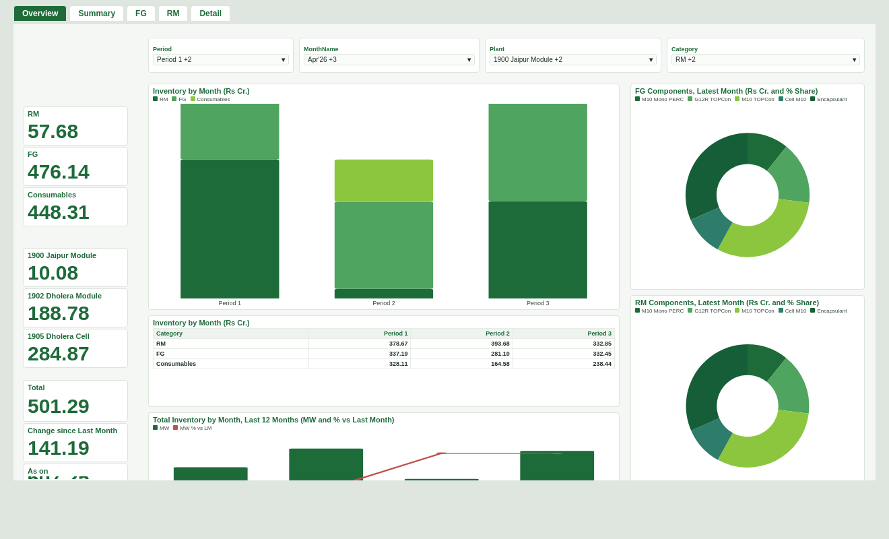
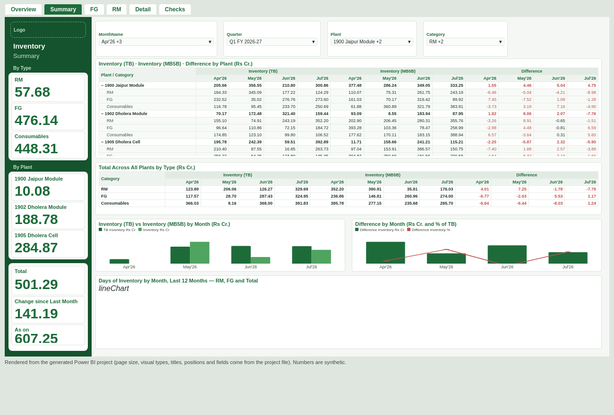
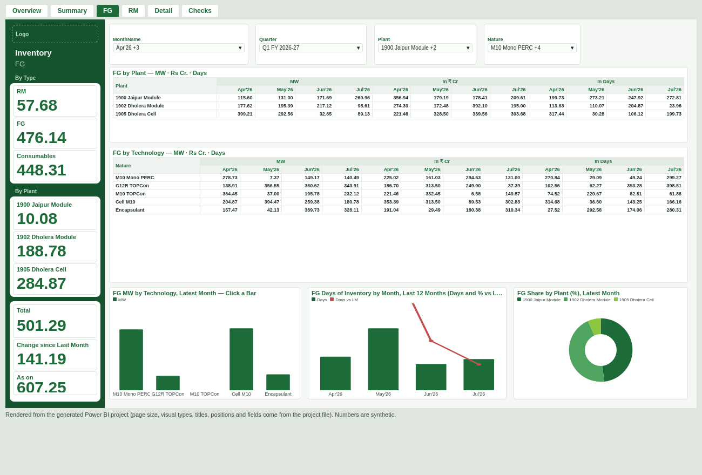
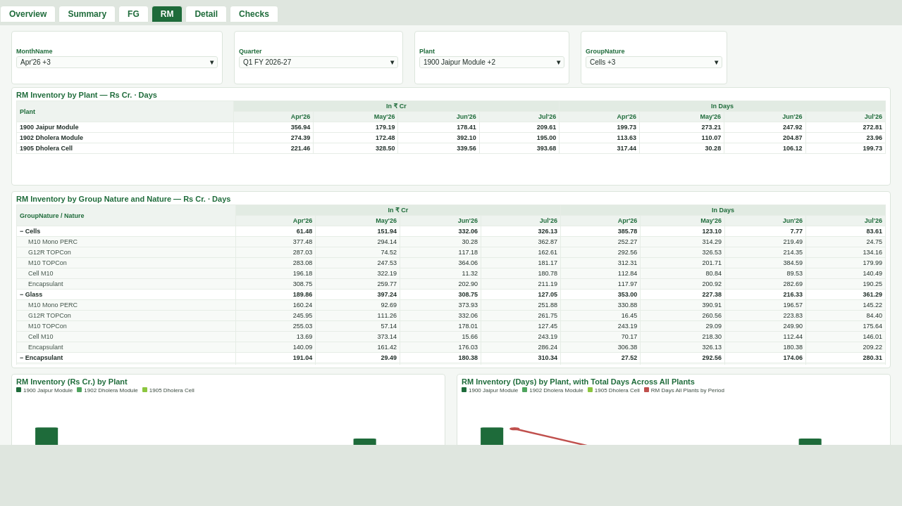
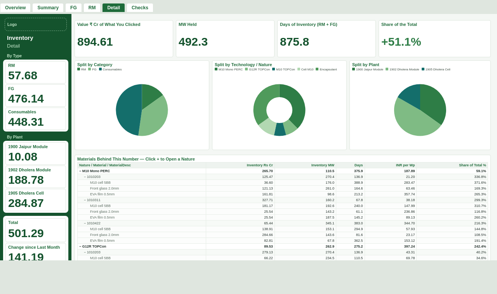

New here? Start here — the finished file is ready to download, so you do not have to build anything by hand. The other tabs are the manual route, kept as a fallback.
On every block: Copy code for the Advanced Editor, and Copy name for the rename box, so nothing is ever typed by hand. Tick Done to keep your place — it is remembered in this browser. Building the pages? Use Build it — one instruction per screen.
If the download will not open in your Power BI, stop trying. Some Power BI builds refuse the project format no matter what is ticked. Go to the Queries, Measures and Build it tabs and build it by hand instead — that route is checked by a script every time this page is published, so the queries, the 11 relationships, the 40 measures and all 64 visuals are guaranteed to agree with each other. Every step there now also tells you what you should see on screen before you move on, and Part 6 of the Walkthrough lists every error we have hit with its one-line fix.
You do not have to make the tables, the measures, the relationships or the pages. They are all inside one download. You open it, tell it where your folder is, and press Refresh. The other tabs stay as a fallback if you ever want to rebuild a piece by hand.
Inventory Report\
RM Raw\ <- the MB5B raw-material files, untouched
FG Raw\ <- the MB5B finished-goods files, untouched
Consble Raw\ <- the MB5B consumables files, untouched
TB\ <- the TB files, named TB_YYYYMM.xlsx
Variables and Calculations.xlsx
Nothing is ever written back to those files. The report reads them and does the work in memory, so the SAP downloads stay exactly as they came out of SAP.
Documents. Do not leave it inside the zip, and do not put it in a folder that
OneDrive is still syncing — wait for the green tick if you use OneDrive.Inventory Report.pbip,
Inventory Report.Report and Inventory Report.SemanticModel.
All three must stay together in the same folder.C:\Users\alisha\Documents\Inventory Report.
The quickest way to get it right: open the folder in File Explorer, click once in the address
bar, copy what appears, and paste it in.RM Raw, FG Raw,
Consble Raw and the new TB file into TB as
TB_YYYYMM.xlsx.File → Save as → change the type to Power BI files (*.pbix) → save that copy on SharePoint or OneDrive. Or Home → Publish to put it in the Power BI service. The .pbip folder is the master copy — keep it.
These are drawn from the project file itself — same page size, same visuals in the same places, same fields — with made-up numbers. They are not screenshots of Power BI Desktop: Power BI Desktop only runs on Windows, so it could not be opened and photographed on the machine that generated the file.





| What you see | What to do |
|---|---|
| It refuses to open the .pbip, or mentions an unsupported report format | Step 1 was skipped or Power BI was not restarted. Do step 1 again, close Power BI fully, reopen. |
| DataSource.Error … could not find the folder | pRoot is wrong. Redo step 4 and check the four sub-folders are named exactly
RM Raw, FG Raw, Consble Raw, TB. |
Everything refreshes but Month is blank on TB |
A TB file is not named TB_YYYYMM.xlsx. Rename it and refresh. |
| Days is blank for 1905 | Correct. 1905 has no module capacity in the Variables workbook, so a blank is shown rather than an invented number. |
| One visual says something is missing | Send me the exact red text. Do not start rebuilding — it will be one line to fix. |
Nothing here is typed by hand. One download holds four folders; you only ever open one of them. If a route fails, close Power BI, open the next route, and lose nothing — the manual tabs stay exactly as they are.
Download InventoryReport-pbip.zip Right-click it → Extract All… → put the extracted folder on your Desktop. Open the extracted folder and you will see:
1 - full report\ the whole thing, five pages of visuals already drawn 2 - model only\ same queries and measures, blank pages 3 - tabular editor\ add-all-measures.csx 4 - plain text\ every query as .m, every measure as .dax set-proot.ps1 sets your folder path for you inventory-theme.json the theme, if you ever need to re-import it
Build 20 — 14 Aug: Errors in dimTBMaster on all eight rows was a forced type cast —Int64.Typeon the sort column errors the whole row when a cell holds a blank, a dash, 1.5 or a number stored as text, and what is lost is the whitelist of inventory GL accounts, so Inventory (TB) reads empty. Every master column indimTBMaster,dimMaterialAttr,varConstantsand the trial balance's amount is now converted cell by cell with a fallback, so an untidy cell becomes a blank instead of an error. There is also a new Edits tab: every fix as find-this / replace-with-this inside one named query, with copy buttons, so a report you have already built can be corrected in place without downloading anything.
Build 19 — 14 Aug: the refresh error is the privacy firewall. "Query 'factTB' (step 'Typed') references other queries or steps, so it may not directly access a data source" is Power Query refusing to let a folder source and the workbook meet — which is the whole point of the report, since the figures come from the folders and the names from Variables and Calculations. It surfaced only now because TB Master finally has rows, so the join actually runs. Fix it once: File → Options → GLOBAL → Privacy → "Always ignore Privacy Level settings", then the same under CURRENT FILE, then Refresh. Also in this build: the trial balance no longer needs that pairing at all —factTB_Stagedreads the TB folder and the TB Master whitelist in one query, andfactTB/factTB_Unmappedread nothing but itsWhitelistedflag.
Build 18 — 14 Aug: repeated data, now that the master sheets are filled in. A stock line that arrives twice is counted once — two rows are the same line when the plant, material, month, special stock, unit and every figure agree, and the file they came from is deliberately ignored, which catches the same month exported twice into one folder; two genuinely different lines for a material in a month differ in at least one figure and are both kept. One master row per material on FG as well as RM, so a material written twice on the sheet cannot multiply its stock. Two new checks:qcMasterDupeslists any material carrying two different natures on a master sheet (only the first can be used, so the sheet decides by accident which one wins), andqcMonthFilessays whether a month arrived from more than one file.
Build 17 — 14 Aug: read straight off your Checks page. The month columns now open under TB / MB5B / Difference — a matrix opens on the outer level of its column hierarchy, so each master column was showing one figure for the whole window, which is what looked like months being added; both hierarchies are now written out expanded with therootthat build 12 left out. Summary is three plants as rows, each opening into RM / FG / Consumables, TB / MB5B / Difference as the master columns, and the newest March plus the three months after it under each. The plants come from your Plant Master sheet throughdimPlantMaster, so the plant list is master data like everything else. The trial balance stops counting fixed assets as inventory: TB Master matched none of your GL accounts and the old fallback kept every row, so Buildings (₹1,977.80 Cr) and Plant & Machinery were being read as raw material — Inventory (TB) is now empty until TB Master lists your inventory GLs, and qcTBByGL names every account that fell out. Value with No Nature (%) is weighted by value rather than rows, because 2.6% of rows was 96% of the money.
Build 16 — 14 Aug: There is no Unallocated plant — not indimPlant, not in the facts, nowhere. A stock row whose valuation area is blank, or is a code that is not 1900 / 1902 / 1905, is left out rather than parked on a plant that does not exist, and a trial-balance row whose profit centre does not resolve to one of the three goes the same way. Nothing is dropped silently: the newqcPlantCodestable on Checks lists every valuation area the stock files contained, its rows, its value in ₹ Cr, and whether the report kept it — so if a code outside the three is carrying real money, that line says so. And the by-plant tables open on March plus the last three months:In Summary Windowpins the newest March that has data and adds the three most recent months, the rule Overview already used, so Summary, FG and RM all open on four columns beginning with the year-end close.
Build 15 — 14 Aug: built against the real workbook. Its sheets areRM NatureandTB Master, and every header in them is now recognised — includingNaturePlant, which the guide had been looking for as two separate columns, so the trial balance's nature was read as missing. A missing master sheet now loads empty instead of failing the refresh (the newfnVarSheetSafehelper): the workbook has noFG Mastersheet at all, and the old code would have stopped dead on it. AndqcVarHeaderson the Checks page is the line that settles the Unassigned question: it prints every sheet, its exact headers and its DataRows. The copy sent to me has a header row and nothing under it — if your ownRM Naturereads DataRows 0, no report can name a material, because there is nothing to name it from.
Build 14 — 14 Aug: one thing only — the workbook is the master and the MB5B export has to meet it. The material key now keeps only letters and digits and discards everything else, which covers the non-breaking spaces, tabs, commas and brackets Excel and SAP put in a cell without showing them; leading zeros are still stripped, and a material that genuinely is0stays0instead of becoming empty. A third match, on the material description, for the case where the master sheet keys its rows by description rather than by number — it only fills a row the first two passes left empty, so it can never overwrite a proper match. AndqcAttrMatchon the Checks page now asks the same question about descriptions, so it tells you whether the two sides meet on the number, on the description, or on neither. That single line is what decides the rest.
Build 13 — 14 Aug: five of these are build 12's own damage and I would rather say so plainly. The four matrices that went missing are back — Summary'sTotal Across All Plants, both FG tables andRM Inventory by Plant: build 12 wrote an expansion state on to the column hierarchy, and on a matrix whose rows are a single level Desktop answered by drawing an empty white card. The Total column now appears only where the columns are months: on Summary it was adding Inventory (TB) + Inventory (MB5B) + Difference into one number, which means nothing; Overview keeps its Total. There are three plants — 1903, 1904 and 1908 come out of the exports and are not plants, so those rows sit on Unallocated with their value intact, and each plant is labelled with its code (1900 Jaipur Module) so slicer, legend and ticker read alike.dimNaturenow carries Consumables and Unassigned, which is where Detail's(Blank)slice came from. The megawatt figures sit above their bars, not on them, and the % vs last month line you never asked for is off that chart. Detail averages instead of adding: its cards, pies and matrix readInventory Rs CrandInventory MW, so the page no longer reads 5,393 on a 1,433 report. And the trial balance stops printing 3.8E-13: TB is rounded to the paisa and the difference percentage is blank while the books side is zero — which it is until TB Master matches your GL accounts, and that is still the one thing the Checks page has to tell us.
Build 12 — 14 Aug: everything you photographed, fixed at its cause. Why every nature, technology and group came out Unassigned: the RM Nature and FG Master sheets give the material with its leading zeros gone, the MB5B files keep them, so000000001010203never met1010203. Both sides are now stripped the same way before the key is built — which also brings RM's MW and In Days back, because those come from the BOM quantity on the sheet that never matched. Consumables are labelled Consumables instead of blank, and anything still unmatched says Unassigned out loud. The missing Total: Inventory by Month had its subtotal switch written Off — every matrix now carries a Total row and a Total column, and both hierarchies are written out expanded so the month columns are open when the page loads. Figures three and four times too high on the two Overview donuts, the FG technology bars and the FG plant donut: a filter that reads a measure is evaluated once for the whole visual, so all four months still landed in it; those four visuals now useLatest Month …measures that set the month themselves. INR per Wp is a measure withDIVIDE, so it is blank rather thanNaNwhere there are no megawatts. The Plant slicer lists each plant once, drops a named plant with nothing behind it, and shows an unnamed code as Plant 1904. The panel is green: Power BI's shape fill takes adefaultselector and without one Desktop ignored the colour and drew grey boxes, which is also why the headings looked invisible. Cosmetic: the clipped third line in each ticker card is gone (it was the measure's name), slicers no longer printMonthNameunder your own heading, the axis scales are off with the figures on the visuals instead, stacked columns show the month's total above the column, the donut legend is off so its labels stop colliding, and the palette starts at mid green so a stack reads as separate bands. Two new self-checks onChecks: how many materials in each sheet meet the stock files, and the trial balance by GL account with its sign — that second one is what will settle the TB question.
Build 11 — 14 Aug: the layout scrutinised page by page, and one thing that was genuinely broken in my own preview: the twelve-month days chart at the foot of Summary is a plain line chart, and my renderer had no code for that type, so it printed the words “line chart” instead of drawing it. It draws now — three lines, RM, FG and the two added together — and the pictures below are the redrawn ones. The report file always had the real visual; it was the picture that was wrong. While I was in there: the Summary reconciliation matrix is 20 pixels taller so twelve expanded rows fit without scrolling, the plant matrices on FG and RM are tighter (they only ever hold three rows) and the charts underneath took the space — 292 tall on FG, 200 on RM — because you asked for this to be mostly visual; the RM nature matrix is deeper, which is where the rows actually are; and the FG days chart's title is shortened so it stops being cut off in a 428-wide card.
Build 10 — 14 Aug: the green panel is now on every page, in the same place. It was only ever built onOverview, and the generated project drew no panel at all — the nine figures floated on the page background, which is why the ticker looked nothing like the design. The green rectangle, the logo strip, the two heading lines, the two section labels and the three white boxes are now generated as real Shape visuals at Horizontal 0, Vertical 0, 184 × 720 on all six pages, with the nine figures on top of them, identical coordinates throughout; only the second heading line changes, to the page's own name, so the panel doubles as a page label. Everything else onSummary,FG,RM,DetailandCheckshas moved to the right of it — Horizontal 192 rather than 16, narrower in the same proportion — so nothing sits under the green. The As-on line is 44 tall instead of 28, which stops the sentence being cut in half. If you are building by hand, build the panel once and copy it: select the strip onOverview, Ctrl+C, Ctrl+V on each of the other five pages.
Build 9 — 14 Aug: three changes, all things you asked for.
The slicers list only the months you have loaded.dimDatewas a continuous April-to-March calendar, so every month of the year appeared in the pickers whether or not a file existed for it. It is now built from the months actually present in the stock files and the trial balance: put July 2025's MB5B in the folder and Jul'25 becomes an option; until then it does not exist in the model, and the quarter picker lists only quarters that have data.
The newest March is genuinely the first column. The default window was the newest March plus the four most recent months, but nothing stopped January and February of the same year slipping in ahead of it. It now ignores everything before that March, so in August you get Mar, May, Jun, Jul, Aug and in April just Mar and Apr, March first. Ticking months yourself still overrides it.
The ticker figures are no longer clipped. The callout size is now worked out from the box the card has to fit in rather than fixed: 11pt in the 156-wide panel cards, 13pt on the Total, 14pt on the wide cards on Detail and Checks. Nothing is cut off mid-figure.
Build 8 — 14 Aug: build 7 refused to refresh with “14 queries are blocked … Query 'factTB_Staged' references other queries or steps, so it may not directly access a data source”. That is Power Query's firewall, and it was my mistake in build 7: I madedimPlantcollect the plant codes out of the data, andfactTB_StagedreaddimPlantback — but a query that opens a folder itself is not allowed to read another query's table. The lookup has moved: the three plant codes are written insidefactTB_Staged, anddimPlantcollects the unnamed codes from both facts while opening nothing. The checker now tests this rule on every query, so no future build can break the refresh this way.
Also do this once, it prevents the whole family of firewall errors: File → Options and settings → Options → CURRENT FILE → Privacy → tick Always ignore Privacy Level settings → OK. All your files are the same folder on your own machine, so there is nothing to protect from itself.
Build 7 — 14 Aug: the month axis is now a real month column. Build 5 and 6 put thePeriodfield parameter on every axis and asked Power BI to swap the months in behind it; on your machine it drew the parameter's own two rows instead, which is why the monthly charts only worked after you changed the axis toMonthNameby hand. The parameter and the two-button toggle are gone: every chart is bound todimDate[MonthName], sorted by month, and every matrix has real month columns. The measures no longer read the toggle either — they look at the grain of the visual itself (ISINSCOPE), so a month column still shows that month's closing stock and a quarter or a total still averages the month-ends instead of adding them up.
Also in build 7: March is the default first column — the newest March that has data, then the four newest months, and ticking your own months overrides it completely; the ticker numbers are 16pt with one decimal and no longer clipped by the card; nothing lands in a blank row any more — a material the master sheets do not cover is labelled Unassigned, a plant code the sheets do not name appears as Plant 1907 rather than a blank slicer entry; the trial balance survives a TB Master that does not match — if the whitelist matches nothing the report keeps every TB row rather than showing an empty Inventory (TB); and there is a new Checks page listing every file that was read, every sheet found in the variables workbook, the GL accounts TB Master does not cover, and the share of rows with no nature — that page tells you which of your source files is the problem, without guessing.
Build 6 — 13 Aug: three fixes on top of build 5. Every slicer except the two-button toggle now multi-selects on a plain click, so several months can be ticked without holding CTRL. Every slicer also carries an is not blank filter, so the empty row no longer appears in the Plant, Technology and Group Nature lists. And the material attributes (nature, group nature, technology, BOM std qty) are now matched a second time on the material number alone: matching on plant and material misses every row when the master sheet has no valuation area column or writes the plant differently, which is what left the nature donuts blank and every technology row empty.
Build 5 — 13 Aug: the project opens and refreshes. One thing was wrong in the generated model: thePeriodfield parameter was missing the group by link between its visible label and its hiddenNAMEOFcolumn, so every chart and matrix drew “By Month / By Quarter” as two categories instead of swapping in the months. Fixed, and the checker now tests for it. Nothing to redo by hand if you built the parameter through Modeling → New parameter → Fields — that route sets it correctly.
Build 4 — 13 Aug: the ten measures that read the latest month
no longer use a filter condition at all; they use an explicit table filter
(FILTER(ALL(dimDate), dimDate[MonthIndex] = LastIdx)), which no engine version can
read as a measure-bearing true/false expression. The zip now extracts into a folder called
InventoryReport build 4, so an old extraction can never be confused with a new
one — if Power BI's error names a path without “build 4” in it, you are opening
the old copy.
Fixed 13 Aug (third fix): next came “a function placeholder has been used in a true/false expression that is used as a table filter expression”. DAX will not let a measure be used directly as a filter condition, and ten measures did that withdimDate[MonthIndex] = [Latest Month Index]. Each now readsVAR LastIdx = [Latest Month Index]first and filters onLastIdx— same answer, legal DAX. The ten areAs On Text, the eightTicker …measures andIn Window; if you pasted them by hand, re-copy those from the Measures tab.
Fixed 13 Aug (second fix): the model then failed with “The 'MW' measure cannot be created because a column with the same name already exists” — Power BI will not hold a column and a measure of the same name in one table. The megawatt column infactInventoryis now calledMW Qty(last step of that query renames it) and theMWmeasure readsSUM(factInventory[MW Qty]). If you built the model by hand, make those two edits. Nothing else changes — the measure is still calledMWeverywhere.
Fixed 13 Aug: the first build of Route A failed with “ReportDefinition: Required artifact is missing”. The cause was in my files, not your Power BI — the report was written against the 2023 file-format versions, and one property inreport.jsonis no longer allowed. It is now generated at the current versions and checked with Microsoft's ownpowerbi-report-authorvalidator, which reports 0 errors and 0 warnings across all five pages and 55 visuals. Re-download the zip before trying again.
1 - full report folder and double-click
Inventory Report.pbip.C:\Users\alisha\Desktop\Inventory Report. Copy it from
the File Explorer address bar rather than typing it.Prefer not to type the path at all? Before step 1, right-click
set-proot.ps1 → Run with PowerShell, paste your folder path
when it asks, and it writes pRoot into both project folders for you. If Windows blocks
it, open PowerShell in the extracted folder and run:
powershell -ExecutionPolicy Bypass -File .\set-proot.ps1 -Root "C:\Users\alisha\Desktop\Inventory Report"
If Route A said “ReportDefinition: Required artifact is missing”,
that is your Power BI build refusing the new report format — nothing you ticked is wrong, and
no amount of retrying fixes it. This folder is written in the old format instead: one
report.json, no definition folder, and both the old and new semantic-model
files, so whichever your version looks for is there. No preview feature is needed for it.
2 - older power bi → double-click
Inventory Report.pbip.pRoot and Refresh exactly as in Route A, steps 3–4.Why the pages are blank here and not in Route A: the old format stores each visual as a block of hand-written query JSON, and I have no Power BI Desktop to verify it against, so shipping guessed visuals would risk a file that opens and then shows errors on every chart. The model — which is the part that takes hours by hand — is complete either way.
3 - model only → double-click Inventory Report.pbip.pRoot and Refresh as in Route A.Use this if you already have a working .pbix and only the measures are missing or out of date. It cannot create the queries — Power Query is not scriptable from outside — so it pairs with the Queries tab, not with Route A.
TabularEditor.Installer.msi → run it.3 - tabular editor\add-all-measures.csx in Notepad, Ctrl+A, Ctrl+C, and paste
it into that C# Script tab.It is safe to run twice: a measure that already exists is overwritten with the same formula rather than duplicated.
5 - plain text holds each query as its own .m file and each
measure as its own .dax file, numbered in the order they must be added, so you can open
them in Notepad and copy without hunting through a web page. Same content as the
Queries and Measures tabs.
This is the route that gets round the fact that these files were generated on Linux: Microsoft Fabric reads the project straight out of the GitHub repo and builds the report on its own servers, so no Power BI Desktop version can refuse it. You need no purchase — the Fabric trial is free for 60 days and asks for no card.
Inventory. Open Advanced and set the licence mode to
Trial (or Fabric capacity). Git integration does not appear on a workspace that is
still on the free shared capacity.audaryag/inventory-guide, branch main, folder
pbip. Connect and sync.pRoot to the SharePoint path and refresh in the cloud.The pbip folder in the repo is kept in step with this guide, so a
Sync in the workspace is all it takes to pick up any change I publish later.
Newest first. Each one is a whole query: in Power Query click the query named on the card, Home → Advanced Editor, Ctrl+A, Delete, paste, Done. Nothing to hunt for and nothing to match up. Do them in the order shown — #5 and #6 read a column that #4 creates — and press Close & Apply once at the end. Red error text between pastes is normal. Every one of these is already inside the download on the Auto tab, so a fresh copy needs none of them.
Why: A forced type cast. Int64.Type on the sort column, and type text on the rest, error the whole row when one cell holds a blank, a dash, a number stored as text, or 1.5 — and Power BI then reports Errors in dimTBMaster. What is lost is the whitelist of inventory GL accounts, so Inventory (TB) reads empty and Difference reads as minus MB5B. Every column is now converted cell by cell with a fallback, so an untidy cell becomes a blank instead of an error. A spreadsheet typed by hand is allowed to be untidy; the report has to cope with it.
Power Query → click dimTBMaster in the list on the left → Home → Advanced Editor → Ctrl+A → Delete → paste this → Done.
let
Raw = fnVarSheet(
{"TB Master", "TBMaster", "TB"},
{
{{"GL Account Number","gl Account Number","GLAccountNumber",
"GL Account","G/L Account","GL No"}, "GLAccount"},
{{"GL Account Description","GL Description","GLDescription",
"Account Description","Account Name"}, "GLDescMaster"},
{{"Nature","NaturePlant","Nature Plant"}, "Nature"},
{{"Plant","Valuation Area","NaturePlant2"}, "TBPlant"},
{{"Sort Order","SortOrder","Sort"}, "TBSort"}
}),
Keys = Table.TransformColumns(Raw, {
{"GLAccount", each Text.TrimStart(Text.Trim(Text.From(_ ?? "")), "0"), type text}}),
NoBlank = Table.SelectRows(Keys, each [GLAccount] <> null and [GLAccount] <> ""),
Wanted = {"GLAccount","GLDescMaster","Nature","TBPlant","TBSort"},
Present = Table.ColumnNames(NoBlank),
Padded = List.Accumulate(List.Difference(Wanted, Present), NoBlank,
(t, c) => Table.AddColumn(t, c, each null)),
Slim = Table.SelectColumns(Padded, Wanted),
// Master columns are converted one cell at a time with a fallback, never with a straight
// type cast. A sort column holding 1.5, a blank, a dash or the word "last" is a typing
// habit on a spreadsheet, not a mistake in the data - but Int64.Type on any of them raises
// a row error, and Power BI then reports "Errors in dimTBMaster" and drops the whole
// whitelist, which is how eight perfectly good GL accounts stopped being inventory.
Sortable = Table.TransformColumns(Slim, {
{"TBSort", each try Int64.From(Number.Round(Number.From(_))) otherwise null,
Int64.Type}}),
Texted = Table.TransformColumns(Sortable, {
{"GLAccount", each Text.From(_ ?? ""), type text},
{"GLDescMaster", each Text.From(_ ?? ""), type text},
{"Nature", each Text.Trim(Text.From(_ ?? "")), type text},
{"TBPlant", each Text.Trim(Text.From(_ ?? "")), type text}}),
Dedup = Table.Distinct(Texted, {"GLAccount"})
in
Dedup
Why: This is the query that reads your RM Nature sheet (there is no query called RM Master). BOM Std Qty cast straight to a number errors the row when the cell holds text, a dash or a stray space, and an errored row carries no nature, no group nature and no MW with it.
Power Query → click dimMaterialAttr in the list on the left → Home → Advanced Editor → Ctrl+A → Delete → paste this → Done.
let
Raw = fnVarSheetSafe(
{"RM Nature", "RM Master", "RMNature", "RM"},
{
{{"Valuation Area","Val Area","Plant","Valuation area"}, "ValuationArea"},
{{"Material","Material No","Material Number"}, "Material"},
{{"Material Description","Merterial Description","Material Desc",
"Material description"}, "MaterialDescVar"},
{{"Nature"}, "Nature"},
{{"Group Nature","GroupNature","Nature Group"}, "GroupNature"},
{{"BOM Std Qty","BOM StdQty","BOMStdQty","Std Qty"}, "BOMStdQty"},
{{"Item"}, "Item"}
}),
// same normalisation as fnCleanMB5B, so the two sides of the join cannot disagree
// over punctuation, case or SAP's leading zeros
NormMat = (v as any) as text =>
let Bare = Text.Select(Text.Upper(Text.From(v ?? "")),
{"A".."Z", "0".."9"}),
Cut = Text.TrimStart(Bare, "0")
in if Cut = "" and Bare <> "" then "0" else Cut,
// a sheet that is missing, or missing a column, comes through empty rather than failing
// the whole refresh; qcAttrMatch and qcVarSheets on Checks then say so out loud
Cols = {"ValuationArea","Material","MaterialDescVar","Nature","GroupNature",
"BOMStdQty","Item"},
Padded = List.Accumulate(List.Difference(Cols, Table.ColumnNames(Raw)), Raw,
(t, c) => Table.AddColumn(t, c, each null)),
Keys = Table.TransformColumns(Padded, {
{"ValuationArea", each Text.Trim(Text.From(_ ?? "")), type text},
{"Material", each NormMat(_), type text}}),
NoBlank = Table.SelectRows(Keys, each [Material] <> null and [Material] <> ""),
MatKey = Table.AddColumn(NoBlank, "MatKey",
each [ValuationArea] & "|" & [Material], type text),
// cell-by-cell with a fallback, so one oddly typed cell on the sheet cannot error the row
// and take the whole master table down with it
Typed = Table.TransformColumns(MatKey, {
{"Nature", each Text.Trim(Text.From(_ ?? "")), type text},
{"GroupNature", each Text.Trim(Text.From(_ ?? "")), type text},
{"BOMStdQty", each try Number.From(_) otherwise null, type number},
{"Item", each Text.Trim(Text.From(_ ?? "")), type text}}),
// a third key, on the description, for the case where the sheet keys its rows by
// material description rather than by number: unmatched rows fall back to it last
Present = Table.ColumnNames(Typed),
WithDesc = if List.Contains(Present, "MaterialDescVar") then Typed
else Table.AddColumn(Typed, "MaterialDescVar", each null, type text),
DescKey = Table.AddColumn(WithDesc, "DescKey",
each Text.Upper(Text.Trim(Text.From([MaterialDescVar] ?? ""))), type text),
Slim = Table.SelectColumns(DescKey,
{"MatKey","Material","DescKey","Nature","GroupNature","BOMStdQty","Item"}),
Dedup = Table.Distinct(Slim, {"MatKey"}),
Buffered = Table.Buffer(Dedup)
in
Buffered
Why: If the 580 is typed as text, or an Effective From cell is not a date, the row errors and RM MW comes out blank across the whole report.
Power Query → click varConstants in the list on the left → Home → Advanced Editor → Ctrl+A → Delete → paste this → Done.
let
Raw = fnVarSheet(
{"Constants", "Constant", "Variables"},
{
{{"Effective From","EffectiveFrom","Effective Date","From Date","Date"}, "EffectiveFrom"},
{{"Constant Name","ConstantName","Name","Constant"}, "ConstantName"},
{{"Value","Amount","Number"}, "Value"}
}),
Wanted = {"EffectiveFrom","ConstantName","Value"},
Padded = List.Accumulate(List.Difference(Wanted, Table.ColumnNames(Raw)), Raw,
(t, c) => Table.AddColumn(t, c, each null)),
Slim = Table.SelectColumns(Padded, Wanted),
// no date given = applies from the beginning of time
Filled = Table.TransformColumns(Slim, {
{"EffectiveFrom", each if _ = null then #date(1900,1,1)
else try DateTime.Date(DateTime.From(_))
otherwise #date(1900,1,1), type date}}),
// cell-by-cell with a fallback: one constant typed as text cannot error the row and take
// the RM megawatt factor down with it
Typed = Table.TransformColumns(Filled, {
{"ConstantName", each Text.Trim(Text.From(_ ?? "")), type text},
{"Value", each try Number.From(_) otherwise null, type number}}),
NoBlank = Table.SelectRows(Typed, each [ConstantName] <> null and [ConstantName] <> ""),
Buffered = Table.Buffer(NoBlank)
in
Buffered
Why: This is the fix for “references other queries or steps, so it may not directly access a data source” on factTB. A query may open as many sources as it likes; it may not lean on another query for data and reach a source as well. Doing the whitelist join here, where the TB folder is already being read, removes that pairing altogether. It also carries the safe conversion of the Amount column, so an amount typed with a comma or a dash for nil cannot error its row.
Power Query → click factTB_Staged in the list on the left → Home → Advanced Editor → Ctrl+A → Delete → paste this → Done.
let
Norm = (n as any) as text =>
Text.Upper(Text.Remove(Text.Trim(Text.From(n ?? "")), {" ",".","_","-","/","(",")"})),
GLNames = {"GLACCOUNTNUMBER","GLACCOUNT","GLACCOUNTNO","GLACCNO","ACCOUNTNUMBER","GLCODE"},
Alias = {
{GLNames, "GLAccount"},
{{"GLACCOUNTDESCRIPTION","GLACCOUNTDESC","ACCOUNTDESCRIPTION",
"GLDESCRIPTION","GLDESC","ACCOUNTNAME"}, "GLDesc"},
{{"PROFITCENTRE","PROFITCENTER","PROFITCTR","PRCTR"}, "ProfitCentre"},
{{"PROFITCENTREDESCRIPTION","PROFITCENTERDESCRIPTION",
"PROFITCENTREDESC","PROFITCENTERDESC"}, "ProfitCentreDesc"},
{{"AMOUNT","AMOUNTINLOCALCURRENCY","AMOUNTINLC","AMTINLOCCUR",
"BALANCE","CLOSINGBALANCE"}, "Amount"}
},
Wanted = {"GLAccount","GLDesc","ProfitCentre","ProfitCentreDesc","Amount"},
Clean = (content as binary) as table =>
let
Wb = Excel.Workbook(content, null, true),
Sheets = Table.SelectRows(Wb, each [Kind] = "Sheet"),
Picked = try Sheets{[Item = "Sheet1", Kind = "Sheet"]}[Data]
otherwise Sheets{0}[Data],
// find the header row: the one holding a GL-account-ish cell
RowsL = Table.ToRows(Picked),
HdrIdx = List.PositionOf(
List.Transform(RowsL, (r) =>
List.AnyTrue(List.Transform(r,
(c) => List.Contains(GLNames, Norm(c))))), true),
Skipped = if HdrIdx <= 0 then Picked else Table.Skip(Picked, HdrIdx),
Promoted = Table.PromoteHeaders(Skipped, [PromoteAllScalars = true]),
Lookup = (c as any) as nullable text =>
let Hits = List.Select(Alias, (a) => List.Contains(a{0}, Norm(c)))
in if List.IsEmpty(Hits) then null else Hits{0}{1},
Pairs = List.RemoveNulls(
List.Transform(Table.ColumnNames(Promoted),
(c) => let t = Lookup(c) in if t = null then null else {c, t})),
// if two source columns map to the same name, keep the first
Renames = List.Accumulate(Pairs, {}, (acc, pr) =>
if List.Contains(List.Transform(acc, (x) => x{1}), pr{1})
then acc else acc & {pr}),
Renamed = Table.RenameColumns(Promoted, Renames),
Padded = List.Accumulate(
List.Difference(Wanted, Table.ColumnNames(Renamed)), Renamed,
(tbl, col) => Table.AddColumn(tbl, col, each null)),
Kept = Table.SelectColumns(Padded, Wanted),
NoJunk = Table.SelectRows(Kept, each
[GLAccount] <> null
and Text.Trim(Text.From([GLAccount])) <> ""
and not Text.StartsWith(Text.From([GLAccount]), "Total",
Comparer.OrdinalIgnoreCase))
in
NoJunk,
Files = Folder.Files(pRoot & "\TB"),
OnlyXlsx = Table.SelectRows(Files, each
Text.StartsWith(Text.Lower([Extension]), ".xls")
and not Text.StartsWith([Name], "~$")
and not Text.StartsWith([Name], ".")),
Loaded = Table.AddColumn(OnlyXlsx, "Data", each Clean([Content])),
// month from the file name: TB_YYYYMM.xlsx
WithMonth = Table.AddColumn(Loaded, "Month", each
let
digits = Text.Select([Name], {"0".."9"}),
yyyymm = Text.Middle(digits, 0, 6)
in
try #date(Number.From(Text.Start(yyyymm, 4)),
Number.From(Text.Middle(yyyymm, 4, 2)), 1)
otherwise null, type date),
Slim = Table.SelectColumns(WithMonth, {"Name","Month","Data"}),
Expanded = Table.ExpandTableColumn(Slim, "Data", Wanted),
Renamed = Table.RenameColumns(Expanded, {{"Name","SourceFile"}}),
Keys = Table.TransformColumns(Renamed, {
{"GLAccount", each Text.TrimStart(Text.Trim(Text.From(_ ?? "")), "0"), type text},
{"ProfitCentre", each Text.Trim(Text.From(_ ?? "")), type text}}),
// plant = characters 3-6 of the profit centre (0-based start = 2)
PlantRaw = Table.AddColumn(Keys, "PlantCode",
each try Text.Middle([ProfitCentre], 2, 4) otherwise null, type text),
// the three named plant codes, written out here rather than read from dimPlant: a query
// that opens a folder itself may not also reference another query, or the refresh stops
// with 'references other queries or steps, so it may not directly access a data source'
Known = {"1900", "1902", "1905"},
PlantCol = Table.AddColumn(PlantRaw, "ValuationArea",
each if List.Contains(Known, [PlantCode]) then [PlantCode] else null,
type text),
// no Unallocated: a trial-balance row whose profit centre does not resolve to one of the
// three plants is left out rather than shown against a plant that does not exist.
// factTB_Unmapped and qcTBByGL on Checks are where those rows are accounted for.
OnPlant = Table.SelectRows(PlantCol, each [ValuationArea] <> null),
// cell-by-cell, so an amount typed with a comma, a dash for nil, or a trailing CR/DR
// cannot error the row and take the trial balance with it
Typed = Table.TransformColumns(OnPlant, {
{"Amount", each try Number.From(_)
otherwise try Number.From(Text.Select(Text.From(_ ?? ""),
{"0".."9", ".", "-"}))
otherwise null, type number}}),
// ---- the TB Master whitelist, read HERE and not in a later query -----------------------
// Power Query's firewall forbids a query that references another query from also reaching
// a data source, and it applies that test to the whole chain: factTB referencing both
// factTB_Staged (which opens the TB folder) and dimTBMaster (which opens the workbook) is
// exactly the combination it blocks, with 'references other queries or steps, so it may
// not directly access a data source'. Doing the join in this query keeps both sources in
// one place - a query may open as many sources as it likes as long as it leans on no other
// query for data - so factTB and factTB_Unmapped below read nothing but this table.
// fnVarSheet is a function, not data, so calling it here does not count as leaning.
MasterRaw = try
fnVarSheet(
{"TB Master", "TBMaster", "TB"},
{
{{"GL Account Number","gl Account Number","GLAccountNumber",
"GL Account","G/L Account","GL No"}, "GLAccount"},
{{"GL Account Description","GL Description","GLDescription",
"Account Description","Account Name"}, "GLDescMaster"},
{{"Nature","NaturePlant","Nature Plant"}, "Nature"},
{{"Plant","Valuation Area","NaturePlant2"}, "TBPlant"},
{{"Sort Order","SortOrder","Sort"}, "TBSort"}
})
otherwise #table({}, {}),
MCols = {"GLAccount","Nature","TBPlant","TBSort"},
MPad = List.Accumulate(List.Difference(MCols, Table.ColumnNames(MasterRaw)), MasterRaw,
(t, c) => Table.AddColumn(t, c, each null)),
MKey = Table.TransformColumns(MPad, {
{"GLAccount", each Text.TrimStart(Text.Trim(Text.From(_ ?? "")), "0"),
type text}}),
MSort = Table.TransformColumns(MKey, {
{"TBSort", each try Int64.From(Number.Round(Number.From(_))) otherwise null,
Int64.Type},
{"Nature", each Text.Trim(Text.From(_ ?? "")), type text},
{"TBPlant", each Text.Trim(Text.From(_ ?? "")), type text}}),
MReal = Table.SelectRows(MSort, each [GLAccount] <> ""),
Master = Table.Buffer(Table.Distinct(Table.SelectColumns(MReal, MCols), {"GLAccount"})),
Joined = Table.NestedJoin(Typed, {"GLAccount"}, Master, {"GLAccount"},
"tpl", JoinKind.LeftOuter),
Flagged = Table.AddColumn(Joined, "Whitelisted",
each not Table.IsEmpty([tpl]), type logical),
Widened = Table.ExpandTableColumn(Flagged, "tpl", {"Nature","TBPlant","TBSort"}),
Out = Table.TransformColumnTypes(Widened, {
{"Nature", type text}, {"TBPlant", type text}, {"TBSort", Int64.Type}})
in
Out
Why: It keeps the rows the whitelist matched, using the Whitelisted flag set in factTB_Staged, and works out RM / FG / Consumables from the Nature text. Paste this after #4, since it needs that flag to exist. It also no longer keeps every TB row when TB Master matches nothing — that fallback was reading Buildings and Plant & Machinery as raw-material inventory.
Power Query → click factTB in the list on the left → Home → Advanced Editor → Ctrl+A → Delete → paste this → Done.
let
Kept = Table.SelectRows(factTB_Staged, each [Whitelisted] = true),
// RM / FG / Consumables from whatever the Nature (or GL description) says
Bucket = (n as any, d as any) as text =>
let T = Text.Upper(Text.From(n ?? "") & " " & Text.From(d ?? "")) in
if Text.Contains(T, "FINISH") or Text.Contains(T, "FG")
then "FG"
else if Text.Contains(T, "CONSUM") or Text.Contains(T, "STORE")
or Text.Contains(T, "SPARE") or Text.Contains(T, "PACK")
then "Consumables"
else if Text.Contains(T, "RAW") or Text.Contains(T, "RM")
or Text.Contains(T, "WIP") or Text.Contains(T, "SEMI")
then "RM"
else "RM",
Cat = Table.AddColumn(Kept, "Category",
each Bucket([Nature], [GLDesc]), type text),
// exact column list and types, so the table is the same shape every refresh
Wanted = {"SourceFile","Month","GLAccount","GLDesc","ProfitCentre","ProfitCentreDesc",
"Amount","PlantCode","ValuationArea","Nature","TBPlant","TBSort","Category"},
Padded = List.Accumulate(List.Difference(Wanted, Table.ColumnNames(Cat)), Cat,
(t, c) => Table.AddColumn(t, c, each null)),
Slim = Table.SelectColumns(Padded, Wanted),
Typed = Table.TransformColumnTypes(Slim, {
{"SourceFile", type text}, {"Month", type date},
{"GLAccount", type text}, {"GLDesc", type text},
{"ProfitCentre", type text}, {"ProfitCentreDesc", type text},
{"Amount", type number}, {"PlantCode", type text},
{"ValuationArea", type text}, {"Nature", type text},
{"TBPlant", type text}, {"TBSort", Int64.Type},
{"Category", type text}})
in
Typed
Why: Reads the same flag, so the two can never disagree about which account counted.
Power Query → click factTB_Unmapped in the list on the left → Home → Advanced Editor → Ctrl+A → Delete → paste this → Done.
let
Out = Table.SelectRows(factTB_Staged, each [Whitelisted] = false),
Group = Table.Group(Out, {"GLAccount","GLDesc"},
{{"Amount", each List.Sum([Amount]), type number},
{"Rows", each Table.RowCount(_), Int64.Type}})
in
Group
Why: Power Query's privacy firewall refusing to let a folder source and the Variables and Calculations workbook meet — which is the whole design, since the figures come from the folders and the names come from the workbook. It is not a fault in any query and cannot be coded around: two sources have to meet somewhere. Turn the firewall off for your own files, once: File → Options and settings → Options → GLOBAL → Privacy → tick “Always ignore Privacy Level settings” → OK, then the same under CURRENT FILE → Privacy, then Refresh. The Global one covers every file you open afterwards, so this is the last time it will bite.
One query per box, in this order. For each: Home → New Source → Blank Query, then Home → Advanced Editor, Ctrl+A, Delete, paste, Done, then right-click the query → Rename and type the name shown. Never paste two boxes into one editor. Errors are normal until all 39 exist.
Replace the whole path with YOUR real folder path. Keep the quote marks. No trailing backslash. No angle brackets.
"C:\Data\Inventory Report"
pRoot & "\Variables and Calculations.xlsx"
Matches headers ignoring case, spaces and punctuation; finds the header row itself; does not require the sheet to be named Sheet1. A genuinely missing column loads as blank rather than failing the refresh - qcHeaders is how you catch that.
let
fnCleanMB5B = (content as binary) as table =>
let
Wb = Excel.Workbook(content, null, true),
// take the sheet named Sheet1 if it exists, otherwise the first sheet
Sheets = Table.SelectRows(Wb, each [Kind] = "Sheet"),
Picked = try Sheets{[Item="Sheet1", Kind="Sheet"]}[Data] otherwise Sheets{0}[Data],
// strip out fully blank leading rows, then promote whichever row is the header.
// SAP downloads often carry a title or a blank line above the real header.
Norm = (n as any) as text =>
Text.Upper(Text.Remove(Text.Trim(Text.From(n ?? "")),
{" ", ".", "_", "-", "/", "(", ")"})),
IsHdrRow = (row as list) as logical =>
List.Contains(List.Transform(row, Norm), "MATERIAL"),
AllRows = Table.ToRows(Picked),
HdrIndex = List.PositionOf(List.Transform(AllRows, IsHdrRow), true),
Trimmed = if HdrIndex > 0 then Table.Skip(Picked, HdrIndex) else Picked,
Promoted = Table.PromoteHeaders(Trimmed, [PromoteAllScalars=true]),
// map whatever the file calls a column onto our internal name.
// matching is done on the normalised form, so case and spacing don't matter.
Aliases = {
{"VALUATIONAREA", "ValuationArea"},
{"VALAREA", "ValuationArea"},
{"PLANT", "ValuationArea"},
{"MATERIAL", "Material"},
{"MATERIALNO", "Material"},
{"MATERIALDESCRIPTION", "MaterialDesc"},
{"MATERIALDESC", "MaterialDesc"},
{"FROMDATE", "FromDate"},
{"TODATE", "ToDate"},
{"OPENINGSTOCK", "OpenQty"},
{"OPENINGVALUE", "OpenVal"},
{"TOTALRECEIPTQTIES", "ReceiptQty"},
{"TOTALRECEIPTQTY", "ReceiptQty"},
{"TOTALRECEIPTQUANTITY", "ReceiptQty"},
{"TOTALRECEIPTQUANTITIES","ReceiptQty"},
{"TOTALRECEIPTVALUE", "ReceiptVal"},
{"TOTALRECEIPTVALUES", "ReceiptVal"},
{"TOTALISSUEQTIES", "IssueQty"},
{"TOTALISSUEQTY", "IssueQty"},
{"TOTALISSUEQUANTITY", "IssueQty"},
{"TOTALISSUEQUANTITIES", "IssueQty"},
{"TOTALISSUEVALUE", "IssueVal"},
{"TOTALISSUEVALUES", "IssueVal"},
{"CLOSINGSTOCK", "CloseQty"},
{"CLOSINGVALUE", "CloseVal"},
{"BASICUNITOFMEASURE", "BaseUOM"},
{"BASEUNITOFMEASURE", "BaseUOM"},
{"BASEUNITMEASURE", "BaseUOM"},
{"BUN", "BaseUOM"},
{"SPECIALSTOCK", "SpecialStock"},
{"CURRENCY", "Currency"}
},
LookupAlias = (n as text) as nullable text =>
let hit = List.Select(Aliases, each _{0} = Norm(n))
in if List.Count(hit) > 0 then hit{0}{1} else null,
Actual = Table.ColumnNames(Promoted),
RenamePrs = List.RemoveNulls(List.Transform(Actual,
each let t = LookupAlias(_) in if t = null then null else {_, t})),
Renamed = Table.RenameColumns(Promoted, RenamePrs),
Wanted = {"ValuationArea","Material","MaterialDesc","FromDate","ToDate",
"OpenQty","OpenVal","ReceiptQty","ReceiptVal","IssueQty","IssueVal",
"CloseQty","CloseVal","BaseUOM","SpecialStock","Currency"},
Present = Table.ColumnNames(Renamed),
Missing = List.Difference(Wanted, Present),
// any column the file genuinely doesn't have is added as blank, so one odd
// export can't stop the whole refresh
Padded = List.Accumulate(Missing, Renamed,
(tbl, col) => Table.AddColumn(tbl, col, each null)),
Kept = Table.SelectColumns(Padded, Wanted),
// one material number written the same way everywhere: no spaces, dots or hyphens,
// upper case, no SAP leading zeros. The master sheets normalise identically, and a
// key that differs only in punctuation is the usual reason a nature never matches.
NormMat = (v as any) as text =>
let Bare = Text.Select(Text.Upper(Text.From(v ?? "")),
{"A".."Z", "0".."9"}),
Cut = Text.TrimStart(Bare, "0")
in if Cut = "" and Bare <> "" then "0" else Cut,
Keys = Table.TransformColumns(Kept, {
{"ValuationArea", each Text.Trim(Text.From(_ ?? "")), type text},
{"Material", each NormMat(_), type text},
{"MaterialDesc", each Text.Trim(Text.From(_ ?? "")), type text}}),
Typed = Table.TransformColumnTypes(Keys, {
{"FromDate", type date}, {"ToDate", type date},
{"OpenQty", type number}, {"OpenVal", type number},
{"ReceiptQty", type number},{"ReceiptVal", type number},
{"IssueQty", type number}, {"IssueVal", type number},
{"CloseQty", type number}, {"CloseVal", type number},
{"BaseUOM", type text}, {"SpecialStock", type text},
{"Currency", type text}}),
NoJunk = Table.SelectRows(Typed, each
[Material] <> null and [Material] <> ""
and not Text.StartsWith([MaterialDesc] ?? "", "Total", Comparer.OrdinalIgnoreCase)
and [FromDate] <> null),
WithMonth = Table.AddColumn(NoJunk, "Month",
each Date.StartOfMonth([FromDate]), type date),
MatKey = Table.AddColumn(WithMonth, "MatKey",
each [ValuationArea] & "|" & [Material], type text)
in
MatKey
in
fnCleanMB5B
let
Files = Folder.Files(pRoot & "\RM Raw"),
OnlyXlsx = Table.SelectRows(Files, each
Text.Lower([Extension]) = ".xlsx"
and not Text.StartsWith([Name], "~$")
and not Text.StartsWith([Name], ".")),
Cleaned = Table.AddColumn(OnlyXlsx, "Data", each fnCleanMB5B([Content])),
Slim = Table.SelectColumns(Cleaned, {"Name","Data"}),
Expanded = Table.ExpandTableColumn(Slim, "Data",
{"ValuationArea","Material","MatKey","MaterialDesc","FromDate","ToDate",
"OpenQty","OpenVal","ReceiptQty","ReceiptVal","IssueQty","IssueVal",
"CloseQty","CloseVal","BaseUOM","SpecialStock","Currency","Month"}),
Tagged = Table.AddColumn(Expanded, "Category", each "RM", type text),
Renamed = Table.RenameColumns(Tagged, {{"Name","SourceFile"}})
in
Renamed
let
Files = Folder.Files(pRoot & "\FG Raw"),
OnlyXlsx = Table.SelectRows(Files, each
Text.Lower([Extension]) = ".xlsx"
and not Text.StartsWith([Name], "~$")
and not Text.StartsWith([Name], ".")),
Cleaned = Table.AddColumn(OnlyXlsx, "Data", each fnCleanMB5B([Content])),
Slim = Table.SelectColumns(Cleaned, {"Name","Data"}),
Expanded = Table.ExpandTableColumn(Slim, "Data",
{"ValuationArea","Material","MatKey","MaterialDesc","FromDate","ToDate",
"OpenQty","OpenVal","ReceiptQty","ReceiptVal","IssueQty","IssueVal",
"CloseQty","CloseVal","BaseUOM","SpecialStock","Currency","Month"}),
Tagged = Table.AddColumn(Expanded, "Category", each "FG", type text),
Renamed = Table.RenameColumns(Tagged, {{"Name","SourceFile"}})
in
Renamed
let
Files = Folder.Files(pRoot & "\Consble Raw"),
OnlyXlsx = Table.SelectRows(Files, each
Text.Lower([Extension]) = ".xlsx"
and not Text.StartsWith([Name], "~$")
and not Text.StartsWith([Name], ".")),
Cleaned = Table.AddColumn(OnlyXlsx, "Data", each fnCleanMB5B([Content])),
Slim = Table.SelectColumns(Cleaned, {"Name","Data"}),
Expanded = Table.ExpandTableColumn(Slim, "Data",
{"ValuationArea","Material","MatKey","MaterialDesc","FromDate","ToDate",
"OpenQty","OpenVal","ReceiptQty","ReceiptVal","IssueQty","IssueVal",
"CloseQty","CloseVal","BaseUOM","SpecialStock","Currency","Month"}),
Tagged = Table.AddColumn(Expanded, "Category", each "Consumables", type text),
Renamed = Table.RenameColumns(Tagged, {{"Name","SourceFile"}})
in
Renamed
Shared helper. Create this BEFORE dimMaterialAttr, dimFGAttr, varConstants and dimTBMaster, which all call it.
let
// Reads a sheet from Variables and Calculations by fuzzy name, promotes the header
// row, and renames columns using an alias list. Case, spaces, dots, underscores,
// hyphens and brackets are all ignored on both sheet names and column names.
fnVarSheet = (sheetAliases as list, columnAliases as list) as table =>
let
Norm = (n as any) as text =>
Text.Upper(Text.Remove(Text.Trim(Text.From(n ?? "")),
{" ", ".", "_", "-", "/", "(", ")", ",", "'"})),
Wb = Excel.Workbook(File.Contents(pVarsFile), null, true),
Sheets = Table.SelectRows(Wb, each [Kind] = "Sheet"),
WantedNm = List.Transform(sheetAliases, Norm),
Hit = Table.SelectRows(Sheets, each List.Contains(WantedNm, Norm([Item]))),
Data = if Table.RowCount(Hit) = 0
then error "No sheet matching: " & Text.Combine(sheetAliases, " / ")
& ". Sheets present: "
& Text.Combine(List.Transform(Sheets[Item], Text.From), " | ")
else Hit{0}[Data],
Promoted = Table.PromoteHeaders(Data, [PromoteAllScalars=true]),
Actual = Table.ColumnNames(Promoted),
Pairs = List.RemoveNulls(List.Transform(Actual, (a) =>
let hit = List.Select(columnAliases, each List.Contains(
List.Transform(_{0}, Norm), Norm(a)))
in if List.Count(hit) > 0 then {a, hit{0}{1}} else null)),
Renamed = Table.RenameColumns(Promoted, Pairs)
in
Renamed
in
fnVarSheet
Shared helper. Same as `fnVarSheet`, but a sheet it cannot find comes back as an empty table instead of stopping the refresh, so a workbook missing one master sheet still loads and the Checks page reports the gap. Create it straight after `fnVarSheet`.
let
fnVarSheetSafe = (sheetAliases as list, columnAliases as list) as table =>
try fnVarSheet(sheetAliases, columnAliases)
otherwise #table({}, {})
in
fnVarSheetSafe
let
Raw = fnVarSheetSafe(
{"RM Nature", "RM Master", "RMNature", "RM"},
{
{{"Valuation Area","Val Area","Plant","Valuation area"}, "ValuationArea"},
{{"Material","Material No","Material Number"}, "Material"},
{{"Material Description","Merterial Description","Material Desc",
"Material description"}, "MaterialDescVar"},
{{"Nature"}, "Nature"},
{{"Group Nature","GroupNature","Nature Group"}, "GroupNature"},
{{"BOM Std Qty","BOM StdQty","BOMStdQty","Std Qty"}, "BOMStdQty"},
{{"Item"}, "Item"}
}),
// same normalisation as fnCleanMB5B, so the two sides of the join cannot disagree
// over punctuation, case or SAP's leading zeros
NormMat = (v as any) as text =>
let Bare = Text.Select(Text.Upper(Text.From(v ?? "")),
{"A".."Z", "0".."9"}),
Cut = Text.TrimStart(Bare, "0")
in if Cut = "" and Bare <> "" then "0" else Cut,
// a sheet that is missing, or missing a column, comes through empty rather than failing
// the whole refresh; qcAttrMatch and qcVarSheets on Checks then say so out loud
Cols = {"ValuationArea","Material","MaterialDescVar","Nature","GroupNature",
"BOMStdQty","Item"},
Padded = List.Accumulate(List.Difference(Cols, Table.ColumnNames(Raw)), Raw,
(t, c) => Table.AddColumn(t, c, each null)),
Keys = Table.TransformColumns(Padded, {
{"ValuationArea", each Text.Trim(Text.From(_ ?? "")), type text},
{"Material", each NormMat(_), type text}}),
NoBlank = Table.SelectRows(Keys, each [Material] <> null and [Material] <> ""),
MatKey = Table.AddColumn(NoBlank, "MatKey",
each [ValuationArea] & "|" & [Material], type text),
// cell-by-cell with a fallback, so one oddly typed cell on the sheet cannot error the row
// and take the whole master table down with it
Typed = Table.TransformColumns(MatKey, {
{"Nature", each Text.Trim(Text.From(_ ?? "")), type text},
{"GroupNature", each Text.Trim(Text.From(_ ?? "")), type text},
{"BOMStdQty", each try Number.From(_) otherwise null, type number},
{"Item", each Text.Trim(Text.From(_ ?? "")), type text}}),
// a third key, on the description, for the case where the sheet keys its rows by
// material description rather than by number: unmatched rows fall back to it last
Present = Table.ColumnNames(Typed),
WithDesc = if List.Contains(Present, "MaterialDescVar") then Typed
else Table.AddColumn(Typed, "MaterialDescVar", each null, type text),
DescKey = Table.AddColumn(WithDesc, "DescKey",
each Text.Upper(Text.Trim(Text.From([MaterialDescVar] ?? ""))), type text),
Slim = Table.SelectColumns(DescKey,
{"MatKey","Material","DescKey","Nature","GroupNature","BOMStdQty","Item"}),
Dedup = Table.Distinct(Slim, {"MatKey"}),
Buffered = Table.Buffer(Dedup)
in
Buffered
let
Raw = fnVarSheetSafe(
{"FG Master", "FM Master", "FG Nature", "FGMaster", "FG"},
{
{{"Valuation Area","Val Area","Plant","Valuation area"}, "ValuationArea"},
{{"Material","Material No","Material Number"}, "Material"},
{{"Material Description","Merterial Description","Material Desc",
"Material description"}, "MaterialDescVar"},
{{"Nature","Tech","Technology"}, "Nature"}
}),
NormMat = (v as any) as text =>
let Bare = Text.Select(Text.Upper(Text.From(v ?? "")),
{"A".."Z", "0".."9"}),
Cut = Text.TrimStart(Bare, "0")
in if Cut = "" and Bare <> "" then "0" else Cut,
Cols = {"ValuationArea","Material","MaterialDescVar","Nature"},
Padded = List.Accumulate(List.Difference(Cols, Table.ColumnNames(Raw)), Raw,
(t, c) => Table.AddColumn(t, c, each null)),
Keys = Table.TransformColumns(Padded, {
{"ValuationArea", each Text.Trim(Text.From(_ ?? "")), type text},
{"Material", each NormMat(_), type text},
{"Nature", each Text.Trim(Text.From(_ ?? "")), type text}}),
NoBlank = Table.SelectRows(Keys, each [Material] <> null and [Material] <> ""),
MatKey = Table.AddColumn(NoBlank, "MatKey",
each [ValuationArea] & "|" & [Material], type text),
Slim = Table.SelectColumns(MatKey, {"MatKey","Material","Nature"}),
Dedup = Table.Distinct(Slim, {"MatKey"}),
Buffered = Table.Buffer(Dedup)
in
Buffered
Works with or without an Effective From column. Needs a row named exactly RM_MW_FACTOR (value 580) or RM MW comes out blank.
let
Raw = fnVarSheet(
{"Constants", "Constant", "Variables"},
{
{{"Effective From","EffectiveFrom","Effective Date","From Date","Date"}, "EffectiveFrom"},
{{"Constant Name","ConstantName","Name","Constant"}, "ConstantName"},
{{"Value","Amount","Number"}, "Value"}
}),
Wanted = {"EffectiveFrom","ConstantName","Value"},
Padded = List.Accumulate(List.Difference(Wanted, Table.ColumnNames(Raw)), Raw,
(t, c) => Table.AddColumn(t, c, each null)),
Slim = Table.SelectColumns(Padded, Wanted),
// no date given = applies from the beginning of time
Filled = Table.TransformColumns(Slim, {
{"EffectiveFrom", each if _ = null then #date(1900,1,1)
else try DateTime.Date(DateTime.From(_))
otherwise #date(1900,1,1), type date}}),
// cell-by-cell with a fallback: one constant typed as text cannot error the row and take
// the RM megawatt factor down with it
Typed = Table.TransformColumns(Filled, {
{"ConstantName", each Text.Trim(Text.From(_ ?? "")), type text},
{"Value", each try Number.From(_) otherwise null, type number}}),
NoBlank = Table.SelectRows(Typed, each [ConstantName] <> null and [ConstantName] <> ""),
Buffered = Table.Buffer(NoBlank)
in
Buffered
let
fnConstantAsOf = (name as text, asOf as date) as nullable number =>
let
Rows = Table.SelectRows(varConstants,
each [ConstantName] = name and [EffectiveFrom] <= asOf),
Sorted = Table.Sort(Rows, {{"EffectiveFrom", Order.Descending}}),
Val = try Sorted{0}[Value] otherwise null
in
Val
in
fnConstantAsOf
The plants come from the **Plant Master** sheet of `Variables and Calculations.xlsx`, the same workbook that holds every other master. Three rows on that sheet, three plants in the report; add a plant there and it appears here without anyone opening Power Query. Enable load OFF - `dimPlant` is the table the report reads. If the sheet is missing, or is there with no rows under its headers, this returns nothing and `dimPlant` falls back to the three codes written into it, so the report still opens. `qcVarHeaders` on Checks is where you see which of the two happened.
let
Raw = fnVarSheetSafe(
{"Plant Master", "PlantMaster", "Plants", "Plant"},
{
{{"Valuation Area","Val Area","Plant Code","Code","Plant"}, "ValuationArea"},
{{"Plant Name","Name","Description","Plant Description",
"Valuation Area Description"}, "PlantName"},
{{"Sort","Order","Sort Order"}, "PlantSort"}
}),
Cols = {"ValuationArea", "PlantName", "PlantSort"},
Padded = List.Accumulate(List.Difference(Cols, Table.ColumnNames(Raw)), Raw,
(t, c) => Table.AddColumn(t, c, each null)),
Slim = Table.SelectColumns(Padded, Cols),
// the code is text and trimmed, because 1900 read as a number will not join to a text key
Keyed = Table.TransformColumns(Slim, {
{"ValuationArea", each Text.Trim(Text.From(_ ?? "")), type text},
{"PlantName", each Text.Trim(Text.From(_ ?? "")), type text}}),
Real = Table.SelectRows(Keyed, each [ValuationArea] <> ""),
// the label the whole report shows: the code and the name together, so the slicer, the
// legends and the ticker cards can never disagree about what a plant is called
Label = Table.AddColumn(Real, "Plant",
each if [PlantName] = "" then [ValuationArea]
else [ValuationArea] & " " & [PlantName], type text),
Sorted = Table.AddColumn(Label, "SortNo",
each try Number.From([PlantSort]) otherwise null, type number),
Indexed = Table.AddIndexColumn(Sorted, "Seq", 1, 1, Int64.Type),
Order = Table.AddColumn(Indexed, "PlantSortNo",
each Int64.From([SortNo] ?? [Seq]), Int64.Type),
Out = Table.SelectColumns(Order, {"ValuationArea", "Plant", "PlantSortNo"})
in
Out
Just the list of plant codes on the Plant Master sheet, so the fact queries can keep to them without each one re-reading the workbook. Falls back to the three codes if the sheet gave nothing. Enable load OFF.
let
FromMaster = try List.Distinct(List.RemoveNulls(dimPlantMaster[ValuationArea]))
otherwise {},
Out = if List.Count(FromMaster) = 0 then {"1900", "1902", "1905"} else FromMaster
in
Out
let
Src = stgRM,
Merged = Table.NestedJoin(Src, {"MatKey"}, dimMaterialAttr, {"MatKey"},
"attr", JoinKind.LeftOuter),
Expanded = Table.ExpandTableColumn(Merged, "attr",
{"Nature","GroupNature","BOMStdQty","Item"}),
// Second pass on the material alone. Plant and material together is the safer key, but
// it misses every row when the master sheet has no valuation area column, or records the
// plant differently from the MB5B export -- and then nothing has a nature at all.
ByMat = Table.Buffer(Table.Distinct(Table.SelectColumns(dimMaterialAttr,
{"Material","Nature","GroupNature","BOMStdQty","Item"}), {"Material"})),
Second = Table.NestedJoin(Expanded, {"Material"}, ByMat, {"Material"},
"attr2", JoinKind.LeftOuter),
Both = Table.ExpandTableColumn(Second, "attr2",
{"Nature","GroupNature","BOMStdQty","Item"},
{"Nature2","GroupNature2","BOMStdQty2","Item2"}),
// Third pass on the material description, for a master sheet that lists its rows by
// description rather than by number. It only ever fills a row the first two passes left
// empty, so it cannot overwrite a proper match.
DescK = Table.AddColumn(Both, "DescKey",
each Text.Upper(Text.Trim(Text.From([MaterialDesc] ?? ""))), type text),
ByDesc = Table.Buffer(Table.Distinct(Table.SelectRows(Table.SelectColumns(dimMaterialAttr,
{"DescKey","Nature","GroupNature","BOMStdQty","Item"}),
each [DescKey] <> null and [DescKey] <> ""), {"DescKey"})),
Third = Table.NestedJoin(DescK, {"DescKey"}, ByDesc, {"DescKey"},
"attr3", JoinKind.LeftOuter),
All3 = Table.ExpandTableColumn(Third, "attr3",
{"Nature","GroupNature","BOMStdQty","Item"},
{"Nature3","GroupNature3","BOMStdQty3","Item3"}),
Coal = Table.AddColumn(All3, "NatureX",
each [Nature] ?? [Nature2] ?? [Nature3], type text),
Coal2 = Table.AddColumn(Coal, "GroupNatureX",
each [GroupNature] ?? [GroupNature2] ?? [GroupNature3], type text),
Coal3 = Table.AddColumn(Coal2, "BOMStdQtyX",
each [BOMStdQty] ?? [BOMStdQty2] ?? [BOMStdQty3], type number),
Coal4 = Table.AddColumn(Coal3, "ItemX",
each [Item] ?? [Item2] ?? [Item3], type text),
Dropped = Table.RemoveColumns(Coal4, {"Nature","Nature2","Nature3",
"GroupNature","GroupNature2","GroupNature3",
"BOMStdQty","BOMStdQty2","BOMStdQty3","Item","Item2","Item3","DescKey"}),
Attr = Table.RenameColumns(Dropped, {{"NatureX","Nature"},
{"GroupNatureX","GroupNature"}, {"BOMStdQtyX","BOMStdQty"},
{"ItemX","Item"}}),
Flag = Table.AddColumn(Attr, "AttrMissing",
each [Nature] = null, type logical),
// a row the master sheet does not cover is named rather than left null: a donut slice
// reading Unassigned tells you there is work to do, one reading (Blank) tells you nothing
Named = Table.TransformColumns(Flag, {
{"Nature", each if _ = null or _ = "" then "Unassigned" else _, type text},
{"GroupNature", each if _ = null or _ = "" then "Unassigned" else _, type text}}),
// RM MW = Closing Stock / BOM Std Qty * RM_MW_FACTOR / 10^6
// (the 580 you had hardcoded, now read from the Constants sheet)
MW = Table.AddColumn(Named, "MW", each
let f = fnConstantAsOf("RM_MW_FACTOR", [Month])
in try [CloseQty] / [BOMStdQty] * f / 1000000 otherwise null,
type number)
in
MW
let
Src = stgFG,
Merged = Table.NestedJoin(Src, {"MatKey"}, dimFGAttr, {"MatKey"},
"attr", JoinKind.LeftOuter),
Expanded = Table.ExpandTableColumn(Merged, "attr", {"Nature"}),
// Same second pass as factRM: the material on its own, for rows the plant-qualified
// key missed because the FG Master sheet has no valuation area or writes it differently.
ByMat = Table.Buffer(Table.Distinct(Table.SelectColumns(dimFGAttr,
{"Material","Nature"}), {"Material"})),
Second = Table.NestedJoin(Expanded, {"Material"}, ByMat, {"Material"},
"attr2", JoinKind.LeftOuter),
Both = Table.ExpandTableColumn(Second, "attr2", {"Nature"}, {"Nature2"}),
Coal = Table.AddColumn(Both, "NatureX", each [Nature] ?? [Nature2], type text),
Dropped = Table.RemoveColumns(Coal, {"Nature","Nature2"}),
Attr = Table.RenameColumns(Dropped, {{"NatureX","Nature"}}),
Flag = Table.AddColumn(Attr, "AttrMissing", each [Nature] = null, type logical),
// same as factRM: an FG whose technology the FG Master does not carry is called
// Unassigned, so the technology matrix and the donut show it instead of a blank row
Named = Table.TransformColumns(Flag, {
{"Nature", each if _ = null or _ = "" then "Unassigned" else _, type text}}),
// Rate = RIGHT(desc,3)
RateTxt = Table.AddColumn(Named, "RateText",
each Text.End(Text.Trim([MaterialDesc] ?? ""), 3), type text),
Rate = Table.AddColumn(RateTxt, "Rate",
each try Number.From(Text.Select([RateText], {"0".."9","."})) otherwise null,
type number),
RateBad = Table.AddColumn(Rate, "RateParseFailed",
each [Rate] = null, type logical),
// Mid = MID(desc,13,13) -- M is 0-based, so start = 12
MidCol = Table.AddColumn(RateBad, "Mid",
each try Text.Middle(Text.Trim([MaterialDesc] ?? ""), 12, 13) otherwise null,
type text),
// Base = LEFT(desc,6)
BaseCol = Table.AddColumn(MidCol, "Base",
each try Text.Start(Text.Trim([MaterialDesc] ?? ""), 6) otherwise null,
type text),
// MW = Closing Stock * Rate / 10^6
MW = Table.AddColumn(BaseCol, "MW",
each try [CloseQty] * [Rate] / 1000000 otherwise null, type number),
// Inr Wp = Closing Value / (MW * 10^6). A zero or missing MW is left blank rather than
// divided by: dividing by zero in M produces NaN, which then prints as NaN in the report.
INRwp = Table.AddColumn(MW, "INR_WP",
each if [MW] = null or [MW] = 0 then null
else try [CloseVal] / ([MW] * 1000000) otherwise null, type number),
Cleaned = Table.RemoveColumns(INRwp, {"RateText"})
in
Cleaned
Consumables carry no nature in any master sheet, so they are named here. Without this they arrive as null and show up as a `(Blank)` row in the technology split and on Detail.
let
Src = stgConble,
Nature = Table.AddColumn(Src, "Nature", each "Consumables", type text),
Group = Table.AddColumn(Nature, "GroupNature", each "Consumables", type text),
Missing = Table.AddColumn(Group, "AttrMissing", each false, type logical)
in
Missing
The single table every report visual uses. The last three steps force an exact column list and exact types, so the table looks identical whatever the source files happen to contain - RM files have no Rate, consumables have no Nature, and this is what stops that mattering.
let
Combined = Table.Combine({factRM, factFG, factConble}),
Wanted = {"SourceFile","ValuationArea","Material","MatKey","MaterialDesc",
"FromDate","ToDate","OpenQty","OpenVal","ReceiptQty","ReceiptVal",
"IssueQty","IssueVal","CloseQty","CloseVal","BaseUOM","SpecialStock",
"Currency","Month","Category","Nature","GroupNature","BOMStdQty","Item",
"AttrMissing","MW","Rate","RateParseFailed","Mid","Base","INR_WP"},
Padded = List.Accumulate(List.Difference(Wanted, Table.ColumnNames(Combined)),
Combined, (t, c) => Table.AddColumn(t, c, each null)),
Kept = Table.SelectColumns(Padded, Wanted),
Typed = Table.TransformColumnTypes(Kept, {
{"SourceFile", type text}, {"ValuationArea", type text},
{"Material", type text}, {"MatKey", type text},
{"MaterialDesc", type text}, {"FromDate", type date},
{"ToDate", type date}, {"OpenQty", type number},
{"OpenVal", type number}, {"ReceiptQty", type number},
{"ReceiptVal", type number}, {"IssueQty", type number},
{"IssueVal", type number}, {"CloseQty", type number},
{"CloseVal", type number}, {"BaseUOM", type text},
{"SpecialStock", type text}, {"Currency", type text},
{"Month", type date}, {"Category", type text},
{"Nature", type text}, {"GroupNature", type text},
{"BOMStdQty", type number}, {"Item", type text},
{"AttrMissing", type logical}, {"MW", type number},
{"Rate", type number}, {"RateParseFailed", type logical},
{"Mid", type text}, {"Base", type text}, {"INR_WP", type number}}),
// last line of defence against a blank category: whatever slipped through above is
// named, so no visual anywhere can show a nameless (Blank) row
NoNulls = Table.TransformColumns(Typed, {
{"Nature", each if _ = null or _ = "" then "Unassigned" else _, type text},
{"GroupNature", each if _ = null or _ = "" then "Unassigned" else _, type text}}),
// the plants are the ones on the Plant Master sheet, through varPlantCodes. A row whose
// valuation area is blank, or is a code that sheet does not list, is dropped rather than
// parked on an Unallocated row - there is no such plant and no such provision.
// qcPlantCodes on Checks lists every code the files contained and what it was worth, so a
// dropped row is never a silent one.
Plants = varPlantCodes,
OnePlant = Table.SelectRows(NoNulls,
each List.Contains(Plants, Text.Trim(Text.From([ValuationArea] ?? "")))),
Trimmed = Table.TransformColumns(OnePlant, {
{"ValuationArea", each Text.Trim(Text.From(_)), type text}}),
// Duplicates. The same stock line can arrive twice - the same month exported twice into
// the same folder, or a file copied under a second name - and two identical lines would
// double that material's stock. A row is treated as the same line when its plant,
// material, month, special stock, unit and every figure agree; the file it came from is
// deliberately not part of that test, which is what catches the same month in two files.
// Two genuinely different lines for one material in one month (different batch, different
// special stock) differ in at least one figure and are both kept.
DedupKey = {"ValuationArea","Material","Month","SpecialStock","BaseUOM",
"OpenQty","OpenVal","ReceiptQty","ReceiptVal","IssueQty","IssueVal",
"CloseQty","CloseVal","Category"},
OneEach = Table.Distinct(Trimmed, DedupKey),
// the megawatt column is renamed because Power BI will not let a table hold a column
// and a measure with the same name, and the report needs the measure to be called MW
Renamed = Table.RenameColumns(OneEach, {{"MW", "MW Qty"}})
in
Renamed
Handles either MW sheet layout and picks automatically: the long one (`Effective From | Tech | Valuation Area | MW`, one row per combination) or the original wide one (a `Tech` column with 1900/1902/1905 across the top). Headers are matched ignoring case, spaces and punctuation. A missing `Effective From` defaults to 1900-01-01, `-` becomes 0, and plant codes are forced to text so they join to `dimPlant`.
let
Wb = Excel.Workbook(File.Contents(pVarsFile), null, true),
Sh = Table.SelectRows(Wb, each [Kind] = "Sheet"),
Norm = (n as any) as text =>
Text.Upper(Text.Remove(Text.Trim(Text.From(n ?? "")), {" ",".","_","-","/","(",")"})),
Hit = Table.SelectRows(Sh, each
List.Contains({"MW","MWCAPACITY","CAPACITY","MWCAP"}, Norm([Item]))),
Data = if Table.IsEmpty(Hit)
then error "No sheet called MW / MW Capacity in the Variables workbook."
else Hit{0}[Data],
Rows = Table.ToRows(Data),
Codes = {"1900","1902","1905"},
AsTxt = (v as any) as text => Text.Trim(Text.From(v ?? "")),
IsCode = (v as any) as logical => List.Contains(Codes, AsTxt(v)),
// ---- decide which layout this sheet is -------------------------------------------------
// long layout is identified by an Effective From header; wide layout by a row of plant codes
DateHdr = {"EFFECTIVEFROM","EFFECTIVEDATE","FROMDATE"},
LongIdx = List.PositionOf(
List.Transform(Rows, (r) =>
List.AnyTrue(List.Transform(r, (c) => List.Contains(DateHdr, Norm(c))))), true),
WideIdx = List.PositionOf(
List.Transform(Rows, (r) => List.Count(List.Select(r, IsCode)) >= 2), true),
// ---- long layout: one row per Tech per plant --------------------------------------------
Long = let
Hdr = Rows{LongIdx},
Find = (alts as list) as number =>
let Idxs = List.Select({0..List.Count(Hdr) - 1},
(i) => List.Contains(alts, Norm(Hdr{i})))
in if List.IsEmpty(Idxs) then -1 else List.First(Idxs),
iDate = Find({"EFFECTIVEFROM","EFFECTIVEDATE","FROMDATE","DATE"}),
iTech = Find({"TECH","TECHNOLOGY","NATURE"}),
iArea = Find({"VALUATIONAREA","VALAREA","PLANT","PLANTCODE"}),
iMW = Find({"MW","CAPACITYMW","CAPACITY"}),
Chk = if iTech < 0 or iArea < 0 or iMW < 0
then error "The MW sheet has an Effective From column but I could not "
& "find Tech, Valuation Area and MW next to it. Read qcMWSheet."
else true,
Body = if Chk then List.Skip(Rows, LongIdx + 1) else {},
Keep = List.Select(Body, (r) =>
AsTxt(r{iTech}) <> "" and AsTxt(r{iArea}) <> ""),
Recs = List.Transform(Keep, (r) =>
[ EffectiveFrom = (if iDate < 0 then #date(1900,1,1)
else try DateTime.Date(DateTime.From(r{iDate}))
otherwise #date(1900,1,1)),
Tech = AsTxt(r{iTech}),
ValuationArea = AsTxt(r{iArea}),
MW = (try Number.From(r{iMW}) otherwise 0) ])
in Recs,
// ---- wide layout: plant codes across the top --------------------------------------------
Wide = let
Hdr = Rows{WideIdx},
Map = List.Select(
List.Transform({0..List.Count(Hdr) - 1},
(i) => [Idx = i, Code = AsTxt(Hdr{i})]),
(m) => List.Contains(Codes, m[Code])),
Body = List.Skip(Rows, WideIdx + 1),
Keep = List.Select(Body, (r) =>
AsTxt(List.First(r)) <> "" and not IsCode(List.First(r))
and List.AnyTrue(List.Transform(Map,
(m) => (try r{m[Idx]} otherwise null) <> null))),
Recs = List.TransformMany(Keep, (r) => Map, (r, m) =>
[ EffectiveFrom = #date(1900,1,1),
Tech = AsTxt(List.First(r)),
ValuationArea = m[Code],
MW = (try Number.From(r{m[Idx]}) otherwise 0) ])
in Recs,
Pairs = if LongIdx >= 0 then Long
else if WideIdx >= 0 then Wide
else error "The MW sheet is neither layout I recognise: no Effective From/Tech header "
& "row, and no row containing two of 1900/1902/1905. Read qcMWSheet.",
T = Table.FromRecords(Pairs,
type table [EffectiveFrom = date, Tech = text, ValuationArea = text, MW = number]),
Out = Table.Buffer(T)
in
Out
let
Months = List.Distinct(List.Sort(factInventory[Month])),
Combos = Table.Distinct(Table.SelectColumns(varMWCapacity, {"Tech","ValuationArea"})),
Grid = Table.AddColumn(Combos, "Month", each Months),
Expanded = Table.ExpandListColumn(Grid, "Month"),
AsOf = Table.AddColumn(Expanded, "CapacityMW", (row) =>
let
Rows = Table.SelectRows(varMWCapacity, each
[Tech] = row[Tech]
and [ValuationArea] = row[ValuationArea]
and [EffectiveFrom] <= row[Month]),
Sorted = Table.Sort(Rows, {{"EffectiveFrom", Order.Descending}}),
Val = try Sorted{0}[MW] otherwise null
in Val, type number),
Typed = Table.TransformColumnTypes(AsOf, {{"Month", type date}})
in
Typed
Bridge table. Without it, slicing FG by Nature leaves Capacity MW unfiltered and Days is wrong everywhere except the grand total.
let
FromRM = List.RemoveNulls(dimMaterialAttr[Nature]),
FromFG = List.RemoveNulls(dimFGAttr[Nature]),
FromCap = List.RemoveNulls(varMWCapacity[Tech]),
// 'Consumables' and 'Unassigned' are written by the fact queries rather than read from a
// master sheet, so they have to be listed here as well. A nature that a fact row carries
// and this table does not is what draws a slice labelled (Blank).
All = List.Distinct(List.Combine({FromRM, FromFG, FromCap,
{"Consumables", "Unassigned"}})),
T = Table.FromList(All, Splitter.SplitByNothing(), {"Nature"}),
Typed = Table.TransformColumnTypes(T, {{"Nature", type text}})
in
Typed
let
Raw = fnVarSheet(
{"TB Master", "TBMaster", "TB"},
{
{{"GL Account Number","gl Account Number","GLAccountNumber",
"GL Account","G/L Account","GL No"}, "GLAccount"},
{{"GL Account Description","GL Description","GLDescription",
"Account Description","Account Name"}, "GLDescMaster"},
{{"Nature","NaturePlant","Nature Plant"}, "Nature"},
{{"Plant","Valuation Area","NaturePlant2"}, "TBPlant"},
{{"Sort Order","SortOrder","Sort"}, "TBSort"}
}),
Keys = Table.TransformColumns(Raw, {
{"GLAccount", each Text.TrimStart(Text.Trim(Text.From(_ ?? "")), "0"), type text}}),
NoBlank = Table.SelectRows(Keys, each [GLAccount] <> null and [GLAccount] <> ""),
Wanted = {"GLAccount","GLDescMaster","Nature","TBPlant","TBSort"},
Present = Table.ColumnNames(NoBlank),
Padded = List.Accumulate(List.Difference(Wanted, Present), NoBlank,
(t, c) => Table.AddColumn(t, c, each null)),
Slim = Table.SelectColumns(Padded, Wanted),
// Master columns are converted one cell at a time with a fallback, never with a straight
// type cast. A sort column holding 1.5, a blank, a dash or the word "last" is a typing
// habit on a spreadsheet, not a mistake in the data - but Int64.Type on any of them raises
// a row error, and Power BI then reports "Errors in dimTBMaster" and drops the whole
// whitelist, which is how eight perfectly good GL accounts stopped being inventory.
Sortable = Table.TransformColumns(Slim, {
{"TBSort", each try Int64.From(Number.Round(Number.From(_))) otherwise null,
Int64.Type}}),
Texted = Table.TransformColumns(Sortable, {
{"GLAccount", each Text.From(_ ?? ""), type text},
{"GLDescMaster", each Text.From(_ ?? ""), type text},
{"Nature", each Text.Trim(Text.From(_ ?? "")), type text},
{"TBPlant", each Text.Trim(Text.From(_ ?? "")), type text}}),
Dedup = Table.Distinct(Texted, {"GLAccount"})
in
Dedup
Header-tolerant: sheet names, header position, case, spaces and punctuation are all matched loosely, and the common SAP spellings (`gl Account Number`, `Profit Center`, `Amount in local currency`, …) are recognised. A column it genuinely cannot find comes through blank rather than failing the refresh. Month comes from the file name, so files must be `TB_YYYYMM.xlsx`.
let
Norm = (n as any) as text =>
Text.Upper(Text.Remove(Text.Trim(Text.From(n ?? "")), {" ",".","_","-","/","(",")"})),
GLNames = {"GLACCOUNTNUMBER","GLACCOUNT","GLACCOUNTNO","GLACCNO","ACCOUNTNUMBER","GLCODE"},
Alias = {
{GLNames, "GLAccount"},
{{"GLACCOUNTDESCRIPTION","GLACCOUNTDESC","ACCOUNTDESCRIPTION",
"GLDESCRIPTION","GLDESC","ACCOUNTNAME"}, "GLDesc"},
{{"PROFITCENTRE","PROFITCENTER","PROFITCTR","PRCTR"}, "ProfitCentre"},
{{"PROFITCENTREDESCRIPTION","PROFITCENTERDESCRIPTION",
"PROFITCENTREDESC","PROFITCENTERDESC"}, "ProfitCentreDesc"},
{{"AMOUNT","AMOUNTINLOCALCURRENCY","AMOUNTINLC","AMTINLOCCUR",
"BALANCE","CLOSINGBALANCE"}, "Amount"}
},
Wanted = {"GLAccount","GLDesc","ProfitCentre","ProfitCentreDesc","Amount"},
Clean = (content as binary) as table =>
let
Wb = Excel.Workbook(content, null, true),
Sheets = Table.SelectRows(Wb, each [Kind] = "Sheet"),
Picked = try Sheets{[Item = "Sheet1", Kind = "Sheet"]}[Data]
otherwise Sheets{0}[Data],
// find the header row: the one holding a GL-account-ish cell
RowsL = Table.ToRows(Picked),
HdrIdx = List.PositionOf(
List.Transform(RowsL, (r) =>
List.AnyTrue(List.Transform(r,
(c) => List.Contains(GLNames, Norm(c))))), true),
Skipped = if HdrIdx <= 0 then Picked else Table.Skip(Picked, HdrIdx),
Promoted = Table.PromoteHeaders(Skipped, [PromoteAllScalars = true]),
Lookup = (c as any) as nullable text =>
let Hits = List.Select(Alias, (a) => List.Contains(a{0}, Norm(c)))
in if List.IsEmpty(Hits) then null else Hits{0}{1},
Pairs = List.RemoveNulls(
List.Transform(Table.ColumnNames(Promoted),
(c) => let t = Lookup(c) in if t = null then null else {c, t})),
// if two source columns map to the same name, keep the first
Renames = List.Accumulate(Pairs, {}, (acc, pr) =>
if List.Contains(List.Transform(acc, (x) => x{1}), pr{1})
then acc else acc & {pr}),
Renamed = Table.RenameColumns(Promoted, Renames),
Padded = List.Accumulate(
List.Difference(Wanted, Table.ColumnNames(Renamed)), Renamed,
(tbl, col) => Table.AddColumn(tbl, col, each null)),
Kept = Table.SelectColumns(Padded, Wanted),
NoJunk = Table.SelectRows(Kept, each
[GLAccount] <> null
and Text.Trim(Text.From([GLAccount])) <> ""
and not Text.StartsWith(Text.From([GLAccount]), "Total",
Comparer.OrdinalIgnoreCase))
in
NoJunk,
Files = Folder.Files(pRoot & "\TB"),
OnlyXlsx = Table.SelectRows(Files, each
Text.StartsWith(Text.Lower([Extension]), ".xls")
and not Text.StartsWith([Name], "~$")
and not Text.StartsWith([Name], ".")),
Loaded = Table.AddColumn(OnlyXlsx, "Data", each Clean([Content])),
// month from the file name: TB_YYYYMM.xlsx
WithMonth = Table.AddColumn(Loaded, "Month", each
let
digits = Text.Select([Name], {"0".."9"}),
yyyymm = Text.Middle(digits, 0, 6)
in
try #date(Number.From(Text.Start(yyyymm, 4)),
Number.From(Text.Middle(yyyymm, 4, 2)), 1)
otherwise null, type date),
Slim = Table.SelectColumns(WithMonth, {"Name","Month","Data"}),
Expanded = Table.ExpandTableColumn(Slim, "Data", Wanted),
Renamed = Table.RenameColumns(Expanded, {{"Name","SourceFile"}}),
Keys = Table.TransformColumns(Renamed, {
{"GLAccount", each Text.TrimStart(Text.Trim(Text.From(_ ?? "")), "0"), type text},
{"ProfitCentre", each Text.Trim(Text.From(_ ?? "")), type text}}),
// plant = characters 3-6 of the profit centre (0-based start = 2)
PlantRaw = Table.AddColumn(Keys, "PlantCode",
each try Text.Middle([ProfitCentre], 2, 4) otherwise null, type text),
// the three named plant codes, written out here rather than read from dimPlant: a query
// that opens a folder itself may not also reference another query, or the refresh stops
// with 'references other queries or steps, so it may not directly access a data source'
Known = {"1900", "1902", "1905"},
PlantCol = Table.AddColumn(PlantRaw, "ValuationArea",
each if List.Contains(Known, [PlantCode]) then [PlantCode] else null,
type text),
// no Unallocated: a trial-balance row whose profit centre does not resolve to one of the
// three plants is left out rather than shown against a plant that does not exist.
// factTB_Unmapped and qcTBByGL on Checks are where those rows are accounted for.
OnPlant = Table.SelectRows(PlantCol, each [ValuationArea] <> null),
// cell-by-cell, so an amount typed with a comma, a dash for nil, or a trailing CR/DR
// cannot error the row and take the trial balance with it
Typed = Table.TransformColumns(OnPlant, {
{"Amount", each try Number.From(_)
otherwise try Number.From(Text.Select(Text.From(_ ?? ""),
{"0".."9", ".", "-"}))
otherwise null, type number}}),
// ---- the TB Master whitelist, read HERE and not in a later query -----------------------
// Power Query's firewall forbids a query that references another query from also reaching
// a data source, and it applies that test to the whole chain: factTB referencing both
// factTB_Staged (which opens the TB folder) and dimTBMaster (which opens the workbook) is
// exactly the combination it blocks, with 'references other queries or steps, so it may
// not directly access a data source'. Doing the join in this query keeps both sources in
// one place - a query may open as many sources as it likes as long as it leans on no other
// query for data - so factTB and factTB_Unmapped below read nothing but this table.
// fnVarSheet is a function, not data, so calling it here does not count as leaning.
MasterRaw = try
fnVarSheet(
{"TB Master", "TBMaster", "TB"},
{
{{"GL Account Number","gl Account Number","GLAccountNumber",
"GL Account","G/L Account","GL No"}, "GLAccount"},
{{"GL Account Description","GL Description","GLDescription",
"Account Description","Account Name"}, "GLDescMaster"},
{{"Nature","NaturePlant","Nature Plant"}, "Nature"},
{{"Plant","Valuation Area","NaturePlant2"}, "TBPlant"},
{{"Sort Order","SortOrder","Sort"}, "TBSort"}
})
otherwise #table({}, {}),
MCols = {"GLAccount","Nature","TBPlant","TBSort"},
MPad = List.Accumulate(List.Difference(MCols, Table.ColumnNames(MasterRaw)), MasterRaw,
(t, c) => Table.AddColumn(t, c, each null)),
MKey = Table.TransformColumns(MPad, {
{"GLAccount", each Text.TrimStart(Text.Trim(Text.From(_ ?? "")), "0"),
type text}}),
MSort = Table.TransformColumns(MKey, {
{"TBSort", each try Int64.From(Number.Round(Number.From(_))) otherwise null,
Int64.Type},
{"Nature", each Text.Trim(Text.From(_ ?? "")), type text},
{"TBPlant", each Text.Trim(Text.From(_ ?? "")), type text}}),
MReal = Table.SelectRows(MSort, each [GLAccount] <> ""),
Master = Table.Buffer(Table.Distinct(Table.SelectColumns(MReal, MCols), {"GLAccount"})),
Joined = Table.NestedJoin(Typed, {"GLAccount"}, Master, {"GLAccount"},
"tpl", JoinKind.LeftOuter),
Flagged = Table.AddColumn(Joined, "Whitelisted",
each not Table.IsEmpty([tpl]), type logical),
Widened = Table.ExpandTableColumn(Flagged, "tpl", {"Nature","TBPlant","TBSort"}),
Out = Table.TransformColumnTypes(Widened, {
{"Nature", type text}, {"TBPlant", type text}, {"TBSort", Int64.Type}})
in
Out
One row per plant, taken from the **Plant Master** sheet through `dimPlantMaster`, and kept to the plants the files actually contain. No Unallocated row and no blank member: a fact row whose valuation area is not one of these was left out upstream, and `qcPlantCodes` on Checks says what that cost.
let
// written out only as the fallback for a Plant Master sheet that is missing or empty
Fallback = #table(
type table [ValuationArea = text, Plant = text, PlantSortNo = Int64.Type],
{
{"1900", "1900 Jaipur Module", 1},
{"1902", "1902 Dholera Module", 2},
{"1905", "1905 Dholera Cell", 3}
}),
Master = try dimPlantMaster otherwise Fallback,
Named = if Table.IsEmpty(Master) then Fallback else Master,
// codes present in the stock files or the trial balance. Only other queries are read
// here and no folder is opened, which is what keeps the firewall quiet.
Seen = List.Distinct(List.RemoveNulls(
List.Combine({factInventory[ValuationArea], factTB_Staged[ValuationArea]}))),
// a named plant with nothing behind it is left out, so the Plant slicer lists what the
// files actually contain and not a fixed list padded with rows that pick nothing
Live = Table.SelectRows(Named, each List.Contains(Seen, [ValuationArea])),
Kept = if Table.IsEmpty(Live) then Named else Live,
Dedup = Table.Distinct(Kept, {"ValuationArea"}),
Ren = Table.RenameColumns(Dedup, {{"PlantSortNo", "PlantSort"}}),
Typed = Table.TransformColumnTypes(Ren, {
{"ValuationArea", type text}, {"Plant", type text},
{"PlantSort", Int64.Type}})
in
Typed
The whitelist against `TB Master` happens in `factTB_Staged`, which is where the trial balance is read - see the note there for why. This query keeps the accounts that matched and works out `Category` from the Nature text, so the trial balance and MB5B can be compared on the same RM / FG / Consumables row. A GL account that is not on `TB Master` is not inventory and is not counted here; `factTB_Unmapped` and `qcTBByGL` name every one of them.
let
Kept = Table.SelectRows(factTB_Staged, each [Whitelisted] = true),
// RM / FG / Consumables from whatever the Nature (or GL description) says
Bucket = (n as any, d as any) as text =>
let T = Text.Upper(Text.From(n ?? "") & " " & Text.From(d ?? "")) in
if Text.Contains(T, "FINISH") or Text.Contains(T, "FG")
then "FG"
else if Text.Contains(T, "CONSUM") or Text.Contains(T, "STORE")
or Text.Contains(T, "SPARE") or Text.Contains(T, "PACK")
then "Consumables"
else if Text.Contains(T, "RAW") or Text.Contains(T, "RM")
or Text.Contains(T, "WIP") or Text.Contains(T, "SEMI")
then "RM"
else "RM",
Cat = Table.AddColumn(Kept, "Category",
each Bucket([Nature], [GLDesc]), type text),
// exact column list and types, so the table is the same shape every refresh
Wanted = {"SourceFile","Month","GLAccount","GLDesc","ProfitCentre","ProfitCentreDesc",
"Amount","PlantCode","ValuationArea","Nature","TBPlant","TBSort","Category"},
Padded = List.Accumulate(List.Difference(Wanted, Table.ColumnNames(Cat)), Cat,
(t, c) => Table.AddColumn(t, c, each null)),
Slim = Table.SelectColumns(Padded, Wanted),
Typed = Table.TransformColumnTypes(Slim, {
{"SourceFile", type text}, {"Month", type date},
{"GLAccount", type text}, {"GLDesc", type text},
{"ProfitCentre", type text}, {"ProfitCentreDesc", type text},
{"Amount", type number}, {"PlantCode", type text},
{"ValuationArea", type text}, {"Nature", type text},
{"TBPlant", type text}, {"TBSort", Int64.Type},
{"Category", type text}})
in
Typed
GL accounts present in the raw TB but absent from `TB Master`. Empty = good. This is what stops a new GL account silently vanishing - and, just as important, what stops a fixed-asset account being counted as inventory. It reads the same `Whitelisted` flag as `factTB`, so the two can never disagree.
let
Out = Table.SelectRows(factTB_Staged, each [Whitelisted] = false),
Group = Table.Group(Out, {"GLAccount","GLDesc"},
{{"Amount", each List.Sum([Amount]), type number},
{"Rows", each Table.RowCount(_), Int64.Type}})
in
Group
One row per month, because every fact is monthly. A daily calendar would repeat each Month value ~30 times and Power BI would refuse to put it on the "one" side of the relationship. One row **only for a month that has data**. It is built from the months actually present in the stock files and the trial balance, not from a continuous April-to-March range, so a month you have not added yet cannot appear as an option in any slicer. Add July 2025's MB5B and July'25 appears in the pickers; until then it does not exist in the model at all. Nothing else has to change when a new month arrives.
let
// the months that actually exist in the data: stock files and trial balance. Building the
// calendar from these, rather than filling in every month between the first and the last,
// is what keeps months you have not loaded yet out of the slicers.
// the trial balance is read inside a try, so a missing or empty TB folder leaves the
// calendar to the stock files instead of taking the whole calendar down with it
TBM = try factTB_Staged[Month] otherwise {},
Seen = List.RemoveNulls(List.Combine({factInventory[Month], TBM})),
Months = List.Sort(List.Distinct(List.Transform(Seen, Date.StartOfMonth))),
T = Table.TransformColumnTypes(
Table.FromList(Months, Splitter.SplitByNothing(), {"Month"}),
{{"Month", type date}}),
MN = Table.AddColumn(T, "MonthName", each Date.ToText([Month], "MMM''yy"), type text),
MS = Table.AddColumn(MN, "MonthSort",
each Date.Year([Month]) * 100 + Date.Month([Month]), Int64.Type),
MI = Table.AddColumn(MS, "MonthIndex",
each Date.Year([Month]) * 12 + Date.Month([Month]), Int64.Type),
FY = Table.AddColumn(MI, "FY", each
let y = if Date.Month([Month]) >= 4 then Date.Year([Month]) else Date.Year([Month]) - 1
in "FY " & Text.From(y) & "-" & Text.End(Text.From(y + 1), 2), type text),
// the year starts on 1 April, so Apr-Jun is Q1 and Jan-Mar is Q4
FYMonth = Table.AddColumn(FY, "FYMonthNo",
each Number.Mod(Date.Month([Month]) - 4, 12) + 1, Int64.Type),
Qtr = Table.AddColumn(FYMonth, "QuarterNo",
each Number.RoundUp([FYMonthNo] / 3), Int64.Type),
QName = Table.AddColumn(Qtr, "Quarter",
each "Q" & Text.From([QuarterNo]) & " " & [FY], type text),
QSort = Table.AddColumn(QName, "QuarterSort", each
let y = if Date.Month([Month]) >= 4 then Date.Year([Month]) else Date.Year([Month]) - 1
in y * 10 + [QuarterNo], Int64.Type),
Out = Table.SelectColumns(QSort,
{"Month","MonthName","MonthSort","MonthIndex","FY",
"FYMonthNo","QuarterNo","Quarter","QuarterSort"})
in
Out
Your self-check: lists the real sheet names and headers of every file in all four folders. Leave Enable load ON.
let
Folders = {"RM Raw", "FG Raw", "Consble Raw", "TB"},
AllFiles = Table.Combine(List.Transform(Folders, (f) =>
Table.AddColumn(
Table.SelectRows(Folder.Files(pRoot & "\" & f),
each Text.Lower([Extension]) = ".xlsx"
and not Text.StartsWith([Name], "~$")
and not Text.StartsWith([Name], ".")),
"Folder", each f, type text))),
Slim = Table.SelectColumns(AllFiles, {"Folder","Name","Content"}),
Hdrs = Table.AddColumn(Slim, "Headers", each
let
Wb = Excel.Workbook([Content], null, true),
Sh = Table.SelectRows(Wb, each [Kind] = "Sheet"),
D = try Sh{[Item="Sheet1", Kind="Sheet"]}[Data] otherwise Sh{0}[Data],
P = Table.PromoteHeaders(D, [PromoteAllScalars=true])
in
Text.Combine(List.Transform(Table.ColumnNames(P), Text.From), " | "),
type text),
Sheets = Table.AddColumn(Hdrs, "SheetNames", each
let Wb = Excel.Workbook([Content], null, true)
in Text.Combine(Table.SelectRows(Wb, each [Kind] = "Sheet")[Item], " | "),
type text),
Out = Table.SelectColumns(Sheets, {"Folder","Name","SheetNames","Headers"})
in
Out
Your self-check for Variables and Calculations: every sheet, its exact headers, and its row count. Leave Enable load ON.
let
Wb = Excel.Workbook(File.Contents(pVarsFile), null, true),
Sh = Table.SelectRows(Wb, each [Kind] = "Sheet"),
Slim = Table.SelectColumns(Sh, {"Item","Data"}),
Hdrs = Table.AddColumn(Slim, "Headers", each
Text.Combine(List.Transform(
Table.ColumnNames(Table.PromoteHeaders([Data], [PromoteAllScalars=true])),
Text.From), " | "), type text),
Rows = Table.AddColumn(Hdrs, "DataRows", each Table.RowCount([Data]) - 1, Int64.Type),
Slim2 = Table.SelectColumns(Rows, {"Item","Headers","DataRows"}),
Out = Table.RenameColumns(Slim2, {{"Item","SheetName"}})
in
Out
Lists FG Natures with no matching Tech on the MW sheet. Those rows get blank Days. Empty table = good.
let
FGNatures = List.Distinct(List.RemoveNulls(dimFGAttr[Nature])),
CapTechs = List.Distinct(List.RemoveNulls(varMWCapacity[Tech])),
Orphans = List.Difference(FGNatures, CapTechs),
T = Table.FromList(Orphans, Splitter.SplitByNothing(), {"Nature"}),
Typed = Table.TransformColumnTypes(T, {{"Nature", type text}})
in
Typed
Answers one question: are the material numbers in the stock files the same numbers as in RM Nature and FG Master? `Matched` near zero with a healthy `Distinct` on both sides means the two sheets are keyed differently - read me the samples. Leave Enable load ON.
let
MB5B = List.Distinct(List.RemoveNulls(factInventory[Material])),
RM = List.Distinct(List.RemoveNulls(dimMaterialAttr[Material])),
FG = List.Distinct(List.RemoveNulls(dimFGAttr[Material])),
Sample = (l as list) as text =>
Text.Combine(List.Transform(List.FirstN(List.Sort(l), 8), Text.From), " | "),
// the same question again on the description, because a master sheet keyed by description
// rather than by material number would show Matched near zero above and healthy here
MB5BD = List.Distinct(List.RemoveNulls(List.Transform(factInventory[MaterialDesc],
each Text.Upper(Text.Trim(Text.From(_ ?? "")))))),
RMD = List.Distinct(List.RemoveNulls(List.Transform(dimMaterialAttr[DescKey],
each Text.Upper(Text.Trim(Text.From(_ ?? "")))))),
Rows = {
{"Stock files (MB5B)", List.Count(MB5B), null, Sample(MB5B)},
{"RM Nature sheet", List.Count(RM),
List.Count(List.Intersect({RM, MB5B})), Sample(RM)},
{"FG Master sheet", List.Count(FG),
List.Count(List.Intersect({FG, MB5B})), Sample(FG)},
{"Stock files - descriptions", List.Count(MB5BD), null, Sample(MB5BD)},
{"RM Nature - descriptions", List.Count(RMD),
List.Count(List.Intersect({RMD, MB5BD})), Sample(RMD)}
},
T = Table.FromRows(Rows,
type table [Source = text, DistinctMaterials = Int64.Type,
MatchedToStockFiles = Int64.Type, FirstEight = text])
in
T
Every valuation area the stock files actually contain, with its rows and its closing value, before the three-plant rule is applied. A code here that is not 1900 / 1902 / 1905 is a row the report leaves out, so this is where you see what leaving it out costs. Leave Enable load ON.
let
Src = Table.Combine({factRM, factFG, factConble}),
Coded = Table.AddColumn(Src, "Code",
each Text.Trim(Text.From([ValuationArea] ?? "")), type text),
Named = Table.TransformColumns(Coded, {
{"Code", each if _ = "" then "(blank)" else _, type text}}),
Grouped = Table.Group(Named, {"Code"}, {
{"Rows", each Table.RowCount(_), Int64.Type},
{"ValueRsCr", each List.Sum(List.Transform(_[CloseVal],
each _ ?? 0)) / 10000000, type number}}),
Flagged = Table.AddColumn(Grouped, "InReport",
each List.Contains({"1900","1902","1905"}, [Code]), type logical),
Sorted = Table.Sort(Flagged, {{"ValueRsCr", Order.Descending}})
in
Sorted
One row per category and month, with how many files it came from. `Files` of 1 everywhere is what you want. A 2 means the same month arrived twice - the same export saved under two names, or a folder holding both a partial and a full file - and the duplicate lines are removed before anything is counted, but the file that should not be there is still worth deleting. Leave Enable load ON.
let
Src = factInventory,
Grouped = Table.Group(Src, {"Category", "Month"}, {
{"Files", each List.Count(List.Distinct([SourceFile])), Int64.Type},
{"FileNames", each Text.Combine(
List.Transform(List.Distinct([SourceFile]), Text.From),
" | "), type text},
{"Rows", each Table.RowCount(_), Int64.Type},
{"ValueRsCr", each List.Sum(List.Transform([CloseVal], each _ ?? 0))
/ 10000000, type number}}),
Sorted = Table.Sort(Grouped, {{"Files", Order.Descending}, {"Month", Order.Descending}})
in
Sorted
Master rows that contradict each other: one material carrying two different natures on the RM or FG sheet. Only one of them can be used - the first - so this is the list to clean up on the sheet itself, and until it is, the nature a material gets depends on which row Excel happens to hold first. Empty is what you want. Leave Enable load ON.
let
NormMat = (v as any) as text =>
let Bare = Text.Select(Text.Upper(Text.From(v ?? "")), {"A".."Z", "0".."9"}),
Cut = Text.TrimStart(Bare, "0")
in if Cut = "" and Bare <> "" then "0" else Cut,
Read = (sheet as list, label as text) as table =>
let
Raw = fnVarSheetSafe(sheet, {
{{"Valuation Area","Val Area","Plant","Valuation area"}, "ValuationArea"},
{{"Material","Material No","Material Number"}, "Material"},
{{"Nature","Tech","Technology"}, "Nature"}
}),
Cols = {"ValuationArea","Material","Nature"},
Padded = List.Accumulate(List.Difference(Cols, Table.ColumnNames(Raw)), Raw,
(t, c) => Table.AddColumn(t, c, each null)),
Slim = Table.SelectColumns(Padded, Cols),
Keys = Table.TransformColumns(Slim, {
{"ValuationArea", each Text.Trim(Text.From(_ ?? "")), type text},
{"Material", each NormMat(_), type text},
{"Nature", each Text.Trim(Text.From(_ ?? "")), type text}}),
Real = Table.SelectRows(Keys, each [Material] <> ""),
Keyed = Table.AddColumn(Real, "MatKey",
each [ValuationArea] & "|" & [Material], type text),
Named = Table.AddColumn(Keyed, "Sheet", each label, type text)
in
Table.SelectColumns(Named, {"Sheet","MatKey","Nature"}),
RM = Read({"RM Nature", "RM Master", "RMNature", "RM"}, "RM Nature"),
FG = Read({"FG Master", "FM Master", "FG Nature", "FGMaster", "FG"}, "FG Master"),
Both = Table.Combine({RM, FG}),
Grouped = Table.Group(Both, {"Sheet","MatKey"}, {
{"Natures", each List.Count(List.Distinct([Nature])), Int64.Type},
{"TheyAre", each Text.Combine(List.Distinct([Nature]), " | "), type text},
{"Rows", each Table.RowCount(_), Int64.Type}}),
Clashes = Table.SelectRows(Grouped, each [Natures] > 1),
Sorted = Table.Sort(Clashes, {{"Sheet", Order.Ascending}, {"MatKey", Order.Ascending}})
in
Sorted
Every GL account the trial balance brought in, with the nature TB Master gives it and its signed total. This is where a credit-balance GL shows itself: an inventory account with a negative total is the reason a plant's TB nets to zero. Leave Enable load ON.
let
Grouped = Table.Group(factTB, {"GLAccount", "GLDesc", "Nature", "Category"}, {
{"AmountRsCr", each List.Sum([Amount]) / 10000000, type number},
{"Rows", each Table.RowCount(_), Int64.Type}}),
Sorted = Table.Sort(Grouped, {{"AmountRsCr", Order.Ascending}}),
Typed = Table.TransformColumnTypes(Sorted, {
{"GLAccount", type text}, {"GLDesc", type text},
{"Nature", type text}, {"Category", type text}})
in
Typed
Diagnostic. Shows the MW sheet exactly as it sits in Excel, cell for cell, with no interpretation. If `varMWCapacity` complains, look here and read me the layout. Leave Enable load ON.
let
Wb = Excel.Workbook(File.Contents(pVarsFile), null, true),
Sh = Table.SelectRows(Wb, each [Kind] = "Sheet"),
Norm = (n as any) as text =>
Text.Upper(Text.Remove(Text.Trim(Text.From(n ?? "")), {" ",".","_","-"})),
Hit = Table.SelectRows(Sh, each
List.Contains({"MW","MWCAPACITY","CAPACITY","MWCAP"}, Norm([Item]))),
Data = Hit{0}[Data],
AsText = Table.TransformColumns(Data,
List.Transform(Table.ColumnNames(Data),
(c) => {c, each Text.From(_ ?? ""), type text}))
in
AsText
The shared RM / FG / Consumables list. Both `factInventory` and `factTB` join to it, which is what puts the trial balance and MB5B on the same row of the Summary matrix.
let
Src = #table(
type table [Category = text, CategorySort = Int64.Type],
{
{"RM", 1},
{"FG", 2},
{"Consumables", 3}
})
in
Src
Deliberately disconnected — no relationship to anything. It exists so a matrix can have `Inventory (TB)`, `Inventory (MB5B)` and `Difference` as its three master columns, with months underneath them. The `Summary Value ₹ Cr` measure reads which one a cell is in.
let
Src = #table(
type table [Metric = text, MetricSort = Int64.Type],
{
{"Inventory (TB)", 1},
{"Inventory (MB5B)", 2},
{"Difference", 3}
})
in
Src
Also disconnected. Gives the FG and RM matrices their `MW` / `In ₹ Cr` / `In Days` master columns.
let
Src = #table(
type table [Measure = text, MeasureSort = Int64.Type],
{
{"MW", 1},
{"In ₹ Cr", 2},
{"In Days", 3}
})
in
Src
In report view: Home → New measure, paste, Enter. One per box.
Value ₹ Cr = DIVIDE(SUM(factInventory[CloseVal]), 10000000)
As On = "as on " & FORMAT(EOMONTH(MAX(dimDate[Month]), 0), "dd MMM yyyy")
Value ₹ Cr Title = "Value ₹ Cr " & [As On]
Opening Value ₹ Cr = DIVIDE(SUM(factInventory[OpenVal]), 10000000)
Receipts ₹ Cr = DIVIDE(SUM(factInventory[ReceiptVal]), 10000000)
Issues ₹ Cr = DIVIDE(SUM(factInventory[IssueVal]), 10000000)
Closing Qty = SUM(factInventory[CloseQty])
RM ₹ Cr = CALCULATE([Value ₹ Cr], factInventory[Category] = "RM")
FG ₹ Cr = CALCULATE([Value ₹ Cr], factInventory[Category] = "FG")
Consumables ₹ Cr = CALCULATE([Value ₹ Cr], factInventory[Category] = "Consumables")
Share of Total % = DIVIDE([Value ₹ Cr], CALCULATE([Value ₹ Cr], ALL(factInventory[Category])))
MW = SUM(factInventory[MW Qty])
FG MW = CALCULATE([MW], factInventory[Category] = "FG")
Capacity MW = SUM(dimCapacity[CapacityMW])
Capacity MW (plant) = CALCULATE(SUM(dimCapacity[CapacityMW]), REMOVEFILTERS(dimNature))
Days of Inventory = VAR Cap = IF(ISBLANK([Capacity MW]), [Capacity MW (plant)], [Capacity MW]) RETURN DIVIDE([MW], Cap)
FG Days = DIVIDE([FG MW], [Capacity MW])
INR per Wp = DIVIDE(SUM(factInventory[CloseVal]), SUM(factInventory[MW Qty]) * 1000000)
Value ₹ Cr LM = VAR PrevIdx = MAX(dimDate[MonthIndex]) - 1 RETURN CALCULATE([Value ₹ Cr], ALL(dimDate), dimDate[MonthIndex] = PrevIdx)
Value ₹ Cr vs LM = [Value ₹ Cr] - [Value ₹ Cr LM]
Value ₹ Cr % vs LM = DIVIDE([Value ₹ Cr vs LM], [Value ₹ Cr LM])
Value ₹ Cr LY = VAR PrevIdx = MAX(dimDate[MonthIndex]) - 12 RETURN CALCULATE([Value ₹ Cr], ALL(dimDate), dimDate[MonthIndex] = PrevIdx)
Value ₹ Cr % vs LY = DIVIDE([Value ₹ Cr] - [Value ₹ Cr LY], [Value ₹ Cr LY])
MW LM = VAR PrevIdx = MAX(dimDate[MonthIndex]) - 1 RETURN CALCULATE([MW], ALL(dimDate), dimDate[MonthIndex] = PrevIdx)
MW vs LM = [MW] - [MW LM]
Days LM = VAR PrevIdx = MAX(dimDate[MonthIndex]) - 1 RETURN CALCULATE([Days of Inventory], ALL(dimDate), dimDate[MonthIndex] = PrevIdx)
Days vs LM = [Days of Inventory] - [Days LM]
Avg Value ₹ Cr = AVERAGEX(VALUES(dimDate[MonthIndex]), [Value ₹ Cr])
Peak Value ₹ Cr = MAXX(VALUES(dimDate[MonthIndex]), [Value ₹ Cr])
Latest Month Value ₹ Cr = VAR LastIdx = CALCULATE(MAX(dimDate[MonthIndex]), ALLSELECTED(dimDate)) RETURN CALCULATE([Value ₹ Cr], FILTER(ALL(dimDate), dimDate[MonthIndex] = LastIdx))
Latest Month MW = VAR LastIdx = CALCULATE(MAX(dimDate[MonthIndex]), ALLSELECTED(dimDate)) RETURN CALCULATE([MW], FILTER(ALL(dimDate), dimDate[MonthIndex] = LastIdx))
Latest Month FG ₹ Cr = VAR LastIdx = CALCULATE(MAX(dimDate[MonthIndex]), ALLSELECTED(dimDate)) RETURN CALCULATE([FG ₹ Cr], FILTER(ALL(dimDate), dimDate[MonthIndex] = LastIdx))
TB ₹ Cr = ROUND(DIVIDE(SUM(factTB[Amount]), 10000000), 2)
Difference ₹ Cr = [TB ₹ Cr] - [Value ₹ Cr]
Difference % = DIVIDE([Difference ₹ Cr], [TB ₹ Cr])
Stock Recon ₹ Cr = [Opening Value ₹ Cr] + [Receipts ₹ Cr] - [Issues ₹ Cr] - [Value ₹ Cr]
Rows Missing Attr = CALCULATE(COUNTROWS(factInventory), factInventory[AttrMissing] = TRUE())
Unmapped TB ₹ Cr = DIVIDE(SUM(factTB_Unmapped[Amount]), 10000000)
Days = [Days of Inventory]
Summary Value ₹ Cr =
SWITCH(SELECTEDVALUE(dimMetric[Metric]),
"Inventory (TB)", [TB ₹ Cr],
"Inventory (MB5B)", [Value ₹ Cr],
"Difference", [Difference ₹ Cr],
[Value ₹ Cr])
Unit Value =
SWITCH(SELECTEDVALUE(dimMeasure[Measure]),
"MW", [MW],
"In ₹ Cr", [Value ₹ Cr],
"In Days", [Days],
[Value ₹ Cr])
Last 4 Months = VAR LastIdx = CALCULATE(MAX(dimDate[MonthIndex]), ALL(dimDate)) RETURN IF(MAX(dimDate[MonthIndex]) > LastIdx - 4, 1, 0)
Latest Month Index = CALCULATE(MAX(dimDate[MonthIndex]), REMOVEFILTERS())
As On Text =
VAR LastIdx = [Latest Month Index]
RETURN "As on " & CALCULATE(MAX(dimDate[MonthName]), REMOVEFILTERS(),
FILTER(ALL(dimDate), dimDate[MonthIndex] = LastIdx))
Ticker Rs Cr =
VAR LastIdx = [Latest Month Index]
RETURN CALCULATE([Value ₹ Cr], REMOVEFILTERS(),
FILTER(ALL(dimDate), dimDate[MonthIndex] = LastIdx))
Ticker RM Rs Cr =
VAR LastIdx = [Latest Month Index]
RETURN CALCULATE([Value ₹ Cr], REMOVEFILTERS(),
FILTER(ALL(dimDate), dimDate[MonthIndex] = LastIdx),
FILTER(ALL(dimCategory), dimCategory[Category] = "RM"))
Ticker FG Rs Cr =
VAR LastIdx = [Latest Month Index]
RETURN CALCULATE([Value ₹ Cr], REMOVEFILTERS(),
FILTER(ALL(dimDate), dimDate[MonthIndex] = LastIdx),
FILTER(ALL(dimCategory), dimCategory[Category] = "FG"))
Ticker Consumables Rs Cr =
VAR LastIdx = [Latest Month Index]
RETURN CALCULATE([Value ₹ Cr], REMOVEFILTERS(),
FILTER(ALL(dimDate), dimDate[MonthIndex] = LastIdx),
FILTER(ALL(dimCategory), dimCategory[Category] = "Consumables"))
Ticker 1900 Rs Cr =
VAR LastIdx = [Latest Month Index]
RETURN CALCULATE([Value ₹ Cr], REMOVEFILTERS(),
FILTER(ALL(dimDate), dimDate[MonthIndex] = LastIdx),
FILTER(ALL(dimPlant), dimPlant[ValuationArea] = "1900"))
Ticker 1902 Rs Cr =
VAR LastIdx = [Latest Month Index]
RETURN CALCULATE([Value ₹ Cr], REMOVEFILTERS(),
FILTER(ALL(dimDate), dimDate[MonthIndex] = LastIdx),
FILTER(ALL(dimPlant), dimPlant[ValuationArea] = "1902"))
Ticker 1905 Rs Cr =
VAR LastIdx = [Latest Month Index]
RETURN CALCULATE([Value ₹ Cr], REMOVEFILTERS(),
FILTER(ALL(dimDate), dimDate[MonthIndex] = LastIdx),
FILTER(ALL(dimPlant), dimPlant[ValuationArea] = "1905"))
Ticker Prev Rs Cr =
VAR LastIdx = [Latest Month Index]
RETURN CALCULATE([Value ₹ Cr], REMOVEFILTERS(),
FILTER(ALL(dimDate), dimDate[MonthIndex] = LastIdx - 1))
Ticker Change Rs Cr = [Ticker Rs Cr] - [Ticker Prev Rs Cr]
Ticker Change % = DIVIDE([Ticker Change Rs Cr], [Ticker Prev Rs Cr])
Ticker Change Text =
IF(
ISBLANK([Ticker Prev Rs Cr]),
"No earlier month to compare",
FORMAT([Ticker Change Rs Cr], "+#,##0.0;-#,##0.0") & " Rs Cr. ("
& FORMAT([Ticker Change %], "+0.0%;-0.0%") & ")"
)
Inventory Rs Cr =
IF(
ISINSCOPE(dimDate[MonthName]),
[Value ₹ Cr],
AVERAGEX(VALUES(dimDate[MonthIndex]), [Value ₹ Cr])
)
In Window =
VAR Picked = ISFILTERED(dimDate[MonthName])
VAR Me = MAX(dimDate[MonthIndex])
VAR Live =
CALCULATETABLE(VALUES(dimDate[MonthIndex]), REMOVEFILTERS(), factInventory)
VAR LastIdx = MAXX(Live, dimDate[MonthIndex])
VAR MarchIdx =
MAXX(
FILTER(
ALL(dimDate),
dimDate[FYMonthNo] = 12
&& dimDate[MonthIndex] <= LastIdx
&& CALCULATE(COUNTROWS(factInventory)) > 0),
dimDate[MonthIndex])
VAR Alive = COUNTROWS(FILTER(Live, dimDate[MonthIndex] = Me))
VAR Place = COUNTROWS(FILTER(Live, dimDate[MonthIndex] > Me)) + 1
RETURN
IF(
Picked,
1,
IF(
Alive > 0
&& Me >= MarchIdx
&& (Place <= 4 || Me = MarchIdx),
1,
0)
)
In Summary Window =
VAR Picked = ISFILTERED(dimDate[MonthName])
VAR Me = MAX(dimDate[MonthIndex])
VAR Live =
CALCULATETABLE(VALUES(dimDate[MonthIndex]), REMOVEFILTERS(), factInventory)
VAR LastIdx = MAXX(Live, dimDate[MonthIndex])
VAR MarchIdx =
MAXX(
FILTER(
ALL(dimDate),
dimDate[FYMonthNo] = 12
&& dimDate[MonthIndex] <= LastIdx
&& CALCULATE(COUNTROWS(factInventory)) > 0),
dimDate[MonthIndex])
VAR Alive = COUNTROWS(FILTER(Live, dimDate[MonthIndex] = Me))
VAR Place = COUNTROWS(FILTER(Live, dimDate[MonthIndex] > Me)) + 1
RETURN
IF(
Picked,
IF(Place <= 12, 1, 0),
IF(Alive > 0 && (Me = MarchIdx || Place <= 3), 1, 0)
)
MW % vs LM = DIVIDE([MW] - [MW LM], [MW LM])
RM MW = CALCULATE([MW], factInventory[Category] = "RM")
RM Days = DIVIDE([RM MW], [Capacity MW (plant)])
Total Days (RM + FG) = DIVIDE([RM MW] + [FG MW], [Capacity MW (plant)])
RM Days All Plants = VAR M = CALCULATE([RM MW], REMOVEFILTERS(dimPlant)) VAR Cap = CALCULATE([Capacity MW (plant)], REMOVEFILTERS(dimPlant)) RETURN DIVIDE(M, Cap)
RM Days All Plants by Period =
IF(
ISINSCOPE(dimDate[MonthName]),
[RM Days All Plants],
AVERAGEX(VALUES(dimDate[MonthIndex]), [RM Days All Plants])
)
Inventory MW =
IF(
ISINSCOPE(dimDate[MonthName]),
[MW],
AVERAGEX(VALUES(dimDate[MonthIndex]), [MW])
)
In Last 12 = VAR LastM = [Latest Month Index] VAR ThisM = MAX(dimDate[MonthIndex]) RETURN IF(ThisM > LastM - 12 && ThisM <= LastM, 1, 0)
Summary Value Rs Cr =
IF(
ISINSCOPE(dimDate[MonthName]),
[Summary Value ₹ Cr],
AVERAGEX(VALUES(dimDate[MonthIndex]), [Summary Value ₹ Cr])
)
TB Inventory Rs Cr =
IF(
ISINSCOPE(dimDate[MonthName]),
[TB ₹ Cr],
AVERAGEX(VALUES(dimDate[MonthIndex]), [TB ₹ Cr])
)
Difference Inventory Rs Cr = [TB Inventory Rs Cr] - [Inventory Rs Cr]
Difference Inventory % = VAR Books = [TB Inventory Rs Cr] RETURN IF(ABS(Books) < 0.05, BLANK(), DIVIDE([Difference Inventory Rs Cr], Books))
Unit Value by Period =
IF(
ISINSCOPE(dimDate[MonthName]),
[Unit Value],
AVERAGEX(VALUES(dimDate[MonthIndex]), [Unit Value])
)
In Latest Month = IF(MAX(dimDate[MonthIndex]) = [Latest Month Index], 1, 0)
Days by Period =
IF(
ISINSCOPE(dimDate[MonthName]),
[Days],
AVERAGEX(VALUES(dimDate[MonthIndex]), [Days])
)
Check MB5B Rows = COUNTROWS(factInventory)
Check TB Rows = COUNTROWS(factTB)
Check Months of Data = DISTINCTCOUNT(factInventory[Month])
Check Plant Codes = DISTINCTCOUNT(factInventory[ValuationArea])
Check Unassigned % =
VAR Unnamed =
CALCULATE(
SUM(factInventory[CloseVal]),
factInventory[Nature] IN {"Unassigned", "(blank)"}
)
RETURN
DIVIDE(Unnamed, SUM(factInventory[CloseVal]))
Everything added in this update, and nothing else — paste these on top of the model you already have. Order matters: the table first, then the measures top to bottom.
Report view → Home → New measure, paste, Enter. One per box. They are also in the Measures tab at the bottom, so do not paste them twice.
Latest Month Index = CALCULATE(MAX(dimDate[MonthIndex]), REMOVEFILTERS())
As On Text =
VAR LastIdx = [Latest Month Index]
RETURN "As on " & CALCULATE(MAX(dimDate[MonthName]), REMOVEFILTERS(),
FILTER(ALL(dimDate), dimDate[MonthIndex] = LastIdx))
Ticker Rs Cr =
VAR LastIdx = [Latest Month Index]
RETURN CALCULATE([Value ₹ Cr], REMOVEFILTERS(),
FILTER(ALL(dimDate), dimDate[MonthIndex] = LastIdx))
Ticker RM Rs Cr =
VAR LastIdx = [Latest Month Index]
RETURN CALCULATE([Value ₹ Cr], REMOVEFILTERS(),
FILTER(ALL(dimDate), dimDate[MonthIndex] = LastIdx),
FILTER(ALL(dimCategory), dimCategory[Category] = "RM"))
Ticker FG Rs Cr =
VAR LastIdx = [Latest Month Index]
RETURN CALCULATE([Value ₹ Cr], REMOVEFILTERS(),
FILTER(ALL(dimDate), dimDate[MonthIndex] = LastIdx),
FILTER(ALL(dimCategory), dimCategory[Category] = "FG"))
Ticker Consumables Rs Cr =
VAR LastIdx = [Latest Month Index]
RETURN CALCULATE([Value ₹ Cr], REMOVEFILTERS(),
FILTER(ALL(dimDate), dimDate[MonthIndex] = LastIdx),
FILTER(ALL(dimCategory), dimCategory[Category] = "Consumables"))
Ticker 1900 Rs Cr =
VAR LastIdx = [Latest Month Index]
RETURN CALCULATE([Value ₹ Cr], REMOVEFILTERS(),
FILTER(ALL(dimDate), dimDate[MonthIndex] = LastIdx),
FILTER(ALL(dimPlant), dimPlant[ValuationArea] = "1900"))
Ticker 1902 Rs Cr =
VAR LastIdx = [Latest Month Index]
RETURN CALCULATE([Value ₹ Cr], REMOVEFILTERS(),
FILTER(ALL(dimDate), dimDate[MonthIndex] = LastIdx),
FILTER(ALL(dimPlant), dimPlant[ValuationArea] = "1902"))
Ticker 1905 Rs Cr =
VAR LastIdx = [Latest Month Index]
RETURN CALCULATE([Value ₹ Cr], REMOVEFILTERS(),
FILTER(ALL(dimDate), dimDate[MonthIndex] = LastIdx),
FILTER(ALL(dimPlant), dimPlant[ValuationArea] = "1905"))
Ticker Prev Rs Cr =
VAR LastIdx = [Latest Month Index]
RETURN CALCULATE([Value ₹ Cr], REMOVEFILTERS(),
FILTER(ALL(dimDate), dimDate[MonthIndex] = LastIdx - 1))
Ticker Change Rs Cr = [Ticker Rs Cr] - [Ticker Prev Rs Cr]
Ticker Change % = DIVIDE([Ticker Change Rs Cr], [Ticker Prev Rs Cr])
Ticker Change Text =
IF(
ISBLANK([Ticker Prev Rs Cr]),
"No earlier month to compare",
FORMAT([Ticker Change Rs Cr], "+#,##0.0;-#,##0.0") & " Rs Cr. ("
& FORMAT([Ticker Change %], "+0.0%;-0.0%") & ")"
)
Inventory Rs Cr =
IF(
ISINSCOPE(dimDate[MonthName]),
[Value ₹ Cr],
AVERAGEX(VALUES(dimDate[MonthIndex]), [Value ₹ Cr])
)
In Window =
VAR Picked = ISFILTERED(dimDate[MonthName])
VAR Me = MAX(dimDate[MonthIndex])
VAR Live =
CALCULATETABLE(VALUES(dimDate[MonthIndex]), REMOVEFILTERS(), factInventory)
VAR LastIdx = MAXX(Live, dimDate[MonthIndex])
VAR MarchIdx =
MAXX(
FILTER(
ALL(dimDate),
dimDate[FYMonthNo] = 12
&& dimDate[MonthIndex] <= LastIdx
&& CALCULATE(COUNTROWS(factInventory)) > 0),
dimDate[MonthIndex])
VAR Alive = COUNTROWS(FILTER(Live, dimDate[MonthIndex] = Me))
VAR Place = COUNTROWS(FILTER(Live, dimDate[MonthIndex] > Me)) + 1
RETURN
IF(
Picked,
1,
IF(
Alive > 0
&& Me >= MarchIdx
&& (Place <= 4 || Me = MarchIdx),
1,
0)
)
In Summary Window =
VAR Picked = ISFILTERED(dimDate[MonthName])
VAR Me = MAX(dimDate[MonthIndex])
VAR Live =
CALCULATETABLE(VALUES(dimDate[MonthIndex]), REMOVEFILTERS(), factInventory)
VAR LastIdx = MAXX(Live, dimDate[MonthIndex])
VAR MarchIdx =
MAXX(
FILTER(
ALL(dimDate),
dimDate[FYMonthNo] = 12
&& dimDate[MonthIndex] <= LastIdx
&& CALCULATE(COUNTROWS(factInventory)) > 0),
dimDate[MonthIndex])
VAR Alive = COUNTROWS(FILTER(Live, dimDate[MonthIndex] = Me))
VAR Place = COUNTROWS(FILTER(Live, dimDate[MonthIndex] > Me)) + 1
RETURN
IF(
Picked,
IF(Place <= 12, 1, 0),
IF(Alive > 0 && (Me = MarchIdx || Place <= 3), 1, 0)
)
MW % vs LM = DIVIDE([MW] - [MW LM], [MW LM])
RM MW = CALCULATE([MW], factInventory[Category] = "RM")
RM Days = DIVIDE([RM MW], [Capacity MW (plant)])
Total Days (RM + FG) = DIVIDE([RM MW] + [FG MW], [Capacity MW (plant)])
RM Days All Plants = VAR M = CALCULATE([RM MW], REMOVEFILTERS(dimPlant)) VAR Cap = CALCULATE([Capacity MW (plant)], REMOVEFILTERS(dimPlant)) RETURN DIVIDE(M, Cap)
RM Days All Plants by Period =
IF(
ISINSCOPE(dimDate[MonthName]),
[RM Days All Plants],
AVERAGEX(VALUES(dimDate[MonthIndex]), [RM Days All Plants])
)
Inventory MW =
IF(
ISINSCOPE(dimDate[MonthName]),
[MW],
AVERAGEX(VALUES(dimDate[MonthIndex]), [MW])
)
In Last 12 = VAR LastM = [Latest Month Index] VAR ThisM = MAX(dimDate[MonthIndex]) RETURN IF(ThisM > LastM - 12 && ThisM <= LastM, 1, 0)
Summary Value Rs Cr =
IF(
ISINSCOPE(dimDate[MonthName]),
[Summary Value ₹ Cr],
AVERAGEX(VALUES(dimDate[MonthIndex]), [Summary Value ₹ Cr])
)
TB Inventory Rs Cr =
IF(
ISINSCOPE(dimDate[MonthName]),
[TB ₹ Cr],
AVERAGEX(VALUES(dimDate[MonthIndex]), [TB ₹ Cr])
)
Difference Inventory Rs Cr = [TB Inventory Rs Cr] - [Inventory Rs Cr]
Difference Inventory % = VAR Books = [TB Inventory Rs Cr] RETURN IF(ABS(Books) < 0.05, BLANK(), DIVIDE([Difference Inventory Rs Cr], Books))
Unit Value by Period =
IF(
ISINSCOPE(dimDate[MonthName]),
[Unit Value],
AVERAGEX(VALUES(dimDate[MonthIndex]), [Unit Value])
)
In Latest Month = IF(MAX(dimDate[MonthIndex]) = [Latest Month Index], 1, 0)
Days by Period =
IF(
ISINSCOPE(dimDate[MonthName]),
[Days],
AVERAGEX(VALUES(dimDate[MonthIndex]), [Days])
)
Check MB5B Rows = COUNTROWS(factInventory)
Check TB Rows = COUNTROWS(factTB)
Check Months of Data = DISTINCTCOUNT(factInventory[Month])
Check Plant Codes = DISTINCTCOUNT(factInventory[ValuationArea])
Check Unassigned % =
VAR Unnamed =
CALCULATE(
SUM(factInventory[CloseVal]),
factInventory[Nature] IN {"Unassigned", "(blank)"}
)
RETURN
DIVIDE(Unnamed, SUM(factInventory[CloseVal]))
Go to Build it and work through the Overview steps, then Summary, then FG, then RM. On each of those four pages, delete what is there first — select everything on the page with Ctrl+A and press Delete — because all four are laid out differently now.
Overview: green panel down the left, chart above table, two donuts on the right, twelve-month strip along the bottom.
Summary: no header band of cards any more. It has its own five
controls, then one matrix with Inventory (TB), Inventory (MB5B) and
Difference as master columns and the plants opening into RM / FG / Consumables, then
the across-all-plants block, then the difference chart. It needs the two new measures
Summary Value Rs Cr and In Summary Window from section 2 above, so
paste those before you start.
FG: also its own five controls now (toggle, Months, Quarters,
Plant, Technology), then two matrices with MW, Rs Cr. and Days as
master columns — the first by plant, the second by technology — then three visuals across the
bottom: MW by technology, the Days trend, and a donut of the share by plant. It needs
Unit Value by Period and In Latest Month from section 2.
RM: rebuilt from the old Excel sheet — its own five controls
(toggle, Months, Quarters, Plant, Group Nature), a matrix of plants with Rs Cr. and
Days as master columns, a second matrix opening Module and Cell into their materials,
then the two charts: RM inventory in Rs Cr. by plant and in days by plant, four periods side by
side in each. It needs Days by Period as well as the two FG measures.
The old header band of six cards and four dropdowns is gone from every page — all five now carry their own controls, so there is nothing to copy and nothing to sync. If you built it before, select those ten visuals on each page and delete them.
Follow top to bottom. Don't skip ahead; each query references the ones before it. Every code block you need is in Appendix A at the end of this file, under the same name as the step that asks for it.
Rough time: Part 1–3 about 40 minutes, Part 4 (visuals) about 2 hours.
0.1 In OneDrive, create this exact structure:
Inventory Report\
RM Raw\
FG Raw\
Consble Raw\
TB\
Variables and Calculations.xlsx
0.2 Put the Variables and Calculations.xlsx I sent you into Inventory Report\ (not into a subfolder). Fill in your data rows. Don't rename sheets or headers.
0.3 Drop your SAP MB5B exports into the three Raw folders. Never edit these files.
0.4 Rename your TB files to TB_202601.xlsx, TB_202602.xlsx, etc. (year then month).
0.5 Get the folder path: open Inventory Report in File Explorer, click the address bar once, copy the whole path. Keep it on your clipboard — you need it in step 1.3.
0.6 Close every Excel file in these folders. A file open in Excel makes the refresh fail with a file-lock error. This applies every time you refresh, forever.
1.1 Open Power BI Desktop → Blank report.
1.2 Ribbon: Home → Transform data. The Power Query Editor window opens. Everything in Part 1 happens in this window.
exact name from the appendix heading (e.g. fnCleanMB5B). Names must match exactly — the other queries call each other by name.
You'll see errors like "pRoot not recognised" until the query it depends on exists. That's expected. Ignore errors until you've created all of them.
1.3 Create the queries in this order:
| # | Query name | Note |
|---|---|---|
| 1 | pRoot | Paste YOUR folder path between the quote marks |
| 2 | pVarsFile | |
| 3 | fnCleanMB5B | |
| 4 | stgRM | |
| 5 | stgFG | |
| 6 | stgConble | |
| 7 | fnVarSheet | helper — must exist before the next four |
| 8 | fnVarSheetSafe | helper — lets a missing master sheet load empty instead of failing |
| 9 | dimPlant | the plants come from Plant Master, kept to the ones with data |
| 10 | dimMaterialAttr | |
| 11 | dimFGAttr | |
| 12 | varConstants | needs a RM_MW_FACTOR = 580 row |
| 13 | fnConstantAsOf | |
| 14 | dimPlantMaster | reads the Plant Master sheet — helper, load off |
| 15 | varPlantCodes | the plant codes on that sheet — helper, load off |
| 16 | factRM | |
| 17 | factFG | |
| 18 | factConble | |
| 19 | factInventory | |
| 20 | varMWCapacity | reads the two-block MW sheet |
| 21 | dimCapacity | |
| 22 | dimNature | |
| 23 | dimTBMaster | |
| 24 | factTB_Staged | |
| 25 | factTB | |
| 26 | factTB_Unmapped | |
| 27 | dimDate | |
| 28 | qcHeaders | self-check |
| 29 | qcVarHeaders | self-check |
| 30 | qcNatureNoCapacity | self-check |
| 31 | qcMWSheet | self-check — shows the MW sheet raw |
| 32 | dimCategory | lets TB and MB5B share one RM/FG/Consumables row |
| 33 | dimMetric | makes Inventory (TB) / Inventory (MB5B) / Difference into columns |
| 34 | dimMeasure | makes MW / In ₹ Cr / In Days into columns |
| 35 | qcAttrMatch | self-check — do the material numbers match between sheets and files |
| 36 | qcTBByGL | self-check — the trial balance by GL account, signed |
| 37 | qcPlantCodes | self-check — every plant code the files contain, and what the ones outside the three cost |
| 38 | qcMonthFiles | self-check — did any month arrive from two files |
| 39 | qcMasterDupes | self-check — one material with two natures on a master sheet |
1.4 — Do this before the first refresh; it is not optional. The report reads two kinds of source - the four stock/TB folders and the Variables and Calculations workbook - and every nature, plant name and TB category comes from putting the two together. Power Query's privacy firewall blocks that pairing by default and reports it as "Query 'x' references other queries or steps, so it may not directly access a data source. Please rebuild this data combination", blocking a dozen queries at once. It is not a fault in the queries and it cannot be coded around: two different sources have to meet somewhere. Turn the firewall off once, for your own files:
File → Options and settings → Options → GLOBAL → Privacy → "Always ignore Privacy Level settings" → OK. Then also, on the same dialog, CURRENT FILE → Privacy → "Always ignore Privacy Level settings" → OK, and refresh again. The Global one covers every file you open afterwards, so this is the last time you have to think about it.
If it asks about credentials, choose Organizational for OneDrive and click through.
1.5 — Important. Turn off loading for the helper queries. For each of these, right-click the query in the left list and untick "Enable load":
pRoot, pVarsFile, fnCleanMB5B, stgRM, stgFG, stgConble, fnVarSheet, fnVarSheetSafe, dimPlantMaster, varPlantCodes, factRM, factFG, factConble, varConstants, fnConstantAsOf, varMWCapacity, factTB_Staged
Leave these ticked (they become your tables):
factInventory, factTB, factTB_Unmapped, dimPlant, dimDate, dimNature, dimCapacity, dimTBMaster, dimMaterialAttr, dimFGAttr, dimCategory, dimMetric, dimMeasure, qcHeaders, qcVarHeaders, qcNatureNoCapacity, qcMWSheet, qcAttrMatch, qcTBByGL, qcPlantCodes, qcMonthFiles, qcMasterDupes
1.6 Ribbon: Home → Close & Apply. Wait for it to load.
table above appears in it, spelled identically. Compare them one by one; a missing one is the single most common cause of an error later.
"Enable load off" looks like); the other 22 are not italic.
factInventory: the preview shows rows, and the columns include CloseVal,Category, Nature, Month, ValuationArea, MW.
factTB: it shows rows, Month is filled in on every row, and ValuationAreais not the word Unallocated on every row.
factTB_Unmapped: ideally empty. Rows here mean a GL account in your TB ismissing from TB Master, so its money is not counted anywhere — add it to TB Master and refresh.
After Close & Apply, the Data pane on the right must list exactly these 22 tables: factInventory, factTB, factTB_Unmapped, dimPlant, dimDate, dimNature, dimCapacity, dimTBMaster, dimMaterialAttr, dimFGAttr, dimCategory, dimMetric, dimMeasure, qcHeaders, qcVarHeaders, qcNatureNoCapacity, qcMWSheet, qcAttrMatch, qcTBByGL, qcPlantCodes, qcMonthFiles, qcMasterDupes.
| Error message | What it means | Fix |
|---|---|---|
| "Column 'X' of the table wasn't found" | a header in Excel doesn't match the code | fix the spelling in Excel to match the code, or tell me and I'll change the code |
| "The key didn't match any rows" | a sheet name is wrong | check sheet names: RM Nature, FG Master, MW Capacity, Constants, TB Master, Plant Master |
| "We couldn't find folder" | pRoot path is wrong | recheck step 0.5; no trailing backslash |
| "The file is being used by another process" | an Excel file is open | close all Excel files; check Task Manager for a stray EXCEL.EXE; delete any ~$ file |
| "Illegal characters in path" | pRoot is not your real path | open the folder in File Explorer, click the address bar, copy it in — keep the quote marks |
| "Token Literal expected" | a text value lost its quote marks | pRoot must be "C:\...\Inventory Report", quotes included |
| "Not enough elements in the enumeration" | a query assumed more columns than the sheet has | you are on an old version of the query — refresh the guide page and re-copy |
| "Expression.Syntax Error" right after pasting | the whole appendix went into one query | one query per Blank Query, 39 times |
Send me the exact error text and I'll tell you the one-line fix.
2.1 Left sidebar: click the Model icon (third one down, looks like a table diagram).
2.2 Power BI will have guessed some relationships. Delete all of them: click each connecting line and press Delete. Cleaner to start blank.
2.3 Create these 11 relationships. To create one: click and drag the from field onto the to field. Then double-click the line and confirm the settings.
| From (the "one" side) | To (the "many" side) | Cardinality | Direction |
|---|---|---|---|
dimDate[Month] | factInventory[Month] | One to many | Single |
dimDate[Month] | factTB[Month] | One to many | Single |
dimDate[Month] | dimCapacity[Month] | One to many | Single |
dimPlant[ValuationArea] | factInventory[ValuationArea] | One to many | Single |
dimPlant[ValuationArea] | factTB[ValuationArea] | One to many | Single |
dimPlant[ValuationArea] | dimCapacity[ValuationArea] | One to many | Single |
dimNature[Nature] | factInventory[Nature] | One to many | Single |
dimNature[Nature] | dimCapacity[Tech] | One to many | Single |
dimTBMaster[GLAccount] | factTB[GLAccount] | One to many | Single |
dimCategory[Category] | factInventory[Category] | One to many | Single |
dimCategory[Category] | factTB[Category] | One to many | Single |
The last two are what let one matrix show the trial balance and MB5B on the same RM / FG / Consumables row. Without them the TB column repeats the same total against every row, which is the classic wrong-looking reconciliation.
dimMetric and dimMeasure get no relationship at all — they are deliberately disconnected. They exist to give a matrix its master columns, and the measures read them with SELECTEDVALUE. If you connect them, the matrix goes blank.
Every one is Single direction. If Power BI offers "Both", don't take it — bidirectional relationships cause wrong totals in ways that are very hard to spot later.
2.4 Skip "Mark as date table" — it needs one row per day, and dimDate is monthly on purpose. None of the measures need it; Value ₹ Cr LM uses MonthIndex instead.
2.5 Fix month sorting: click the MonthName column in dimDate → ribbon Column tools → Sort by column → pick MonthSort. Without this, months sort alphabetically (Apr, Aug, Dec…) and every chart reads as nonsense.
Two ways to reach Sort by column, use whichever pane you can see: Data view — left sidebar, the middle icon (a grid) → click the table in the Data pane → click the column's heading in the grid → ribbon Column tools → Sort by column. Model view — left sidebar, the third icon → click the field's name inside the table box → the Properties pane opens on the right → expand Advanced → Sort by column. If you can only see one view icon you are still inside the Power Query window; close it with Home → Close & Apply and all three icons appear.
2.6 Do the same for: dimPlant[Plant] → PlantSort, dimCategory[Category] → CategorySort, dimMetric[Metric] → MetricSort, dimMeasure[Measure] → MeasureSort, dimDate[Quarter] → QuarterSort. The middle two matter — without them your master columns come out alphabetically (Difference first), which reads backwards. Quarter matters because alphabetical order puts Q1 of every year together.
2.7 Hide the plumbing so the Fields list stays usable. In Model view, right-click the field's name inside its table box → Hide in report view. Do it on: factInventory[MatKey], factTB[PlantCode], dimDate[MonthSort], dimPlant[PlantSort], dimDate[FYMonthNo], dimDate[QuarterNo], dimDate[QuarterSort].
Active box ticked. Read it as a table and compare it line by line with 2.3 — far easier than reading the diagram.
Single (never Both).
dimMetric and dimMeasure appear in no relationship at all.2.8 Nothing else to set up for quarters — the Quarter column does it. The Month slicer lets you tick exactly which months a page compares, and the Quarter slicer picks Q1 FY 2026-27 (April–June) and so on. Both are just slicers, built in Part 4.
3.1 Left sidebar: click the Report icon (top one).
3.2 In the Fields pane, click factInventory once to select it.
3.3 Ribbon: Home → New measure. A formula bar appears at the top.
3.4 Delete what's there, paste one measure from Appendix B, press Enter.
3.5 Repeat 3.3–3.4 for every measure in Appendix B, strictly top to bottom. One at a time — Power BI takes one measure per box. Order matters: later measures use earlier ones, so pasting out of order gives "cannot be determined" on a measure that is perfectly fine.
It does not matter which table a measure ends up under. Power BI files it beside whatever was selected, and that changes nothing about how it behaves. To find one later, type its name into the search box at the top of the Data pane rather than opening tables. If the ₹ sign does not survive pasting and a measure lands as Value Cr, right-click it → Rename and type the name again from the guide. The formula is unaffected.
Value into the Data pane search box: Value ₹ Cr is there, with a calculator icon.not finished; the pages will fail on whichever one is missing.
Closing Value, Inv RM, Inv FG,Inv Consumables, TB Value, Prev Month. Delete any you find (right-click → Delete from model), otherwise a visual may quietly use the old one.
Days is the one name that stays. Do not delete it — the RM and FG matrices use it.Click it once and check the formula bar reads Days = [Days of Inventory]; if it says anything else, select the whole formula and paste the Appendix B version over it.
3.6 Everything money is already in crore rupees and named to say so (Value ₹ Cr, TB ₹ Cr, …), so no currency symbol is needed. Click each ₹ Cr measure → ribbon Measure tools → Format: Decimal number, Decimal places: 2. For MW, FG MW, Capacity MW, Days of Inventory, use Decimal places: 1. For every % measure use Format: Percentage, 1 decimal.
3.7 If you built an earlier version of this file, the old names are gone: Closing Value became Value ₹ Cr, Inv RM/FG/Consumables became RM/FG/Consumables ₹ Cr, TB Value became TB ₹ Cr, Prev Month became Value ₹ Cr LM. Delete those six (right-click → Delete from model) after the new ones exist, or visuals will still point at the old ones.
Days is the exception: the name is unchanged but the formula is not. Do not delete it — click it and paste the Appendix B version (Days = [Days of Inventory]) over whatever is in the formula bar. Deleting it breaks the RM and FG matrices, which read it through Unit Value.
Each visual is spelled out the same way: what to insert, which field goes in which well, and the four numbers that place it on a 1280 x 720 canvas.
Prefer one instruction at a time? Use the Build it tab — same content, one step per screen, with a Next button.
To place any visual: select it → Format pane → General → Properties → open Size and Position → type Width, Height, Horizontal (this is X) and Vertical (this is Y). Older versions put all four under Size and style.
What the Format pane calls things. Every name below is a heading you click in the paintbrush pane. If a heading is not in your list, your version does not have it — skip that line, nothing else changes.
| Name in the Format pane | What it actually is |
|---|---|
| Callout value | the one big number on a card |
| Category label | the small grey words under the number on a card, which repeat the measure's name. The newer Card visual has none |
| Title | the heading strip along the top of any visual, which you type yourself |
| Column headers | the headings across the top of a matrix or table |
| Row headers | the names down the left of a matrix, where the +/− signs live |
| Values | the numbers in the body of a matrix or table |
| Detail labels | the numbers or words written on the slices of a pie or donut |
| Legend | the small colour key that names each colour |
| X-axis | the labels along the bottom of a chart |
| Y-axis | the number scale up the side of a chart |
| Data labels | numbers printed on top of the bars themselves |
| Grid | the lines between matrix rows, and the row height |
4.0 Canvas and theme, before anything else.
Colours, fonts, borders and card styling all come from the theme, so nothing below asks you to colour anything.
Only two colours are ever used for a printed number, and never grey: #FFFFFF bold when the number sits on top of a coloured bar or slice, and #14532D (or #1F2A24 for plain figures) when it sits on the white card. If a number anywhere looks faint grey — inside a bar, above a line, on an axis — that visual predates this theme: re-import the theme file, then check the visual's Data labels → Colour. On a combo chart the two series are set separately, under Data labels → Apply settings to → Series: the column series #FFFFFF, the line series #14532D.
Create the 6 pages with the + at the bottom, named: Overview · Summary · FG · RM · Detail · Checks.
Build it once on Overview and copy it to the other five pages — the panel is the one thing that never moves, so a reader always finds the same figures in the same corner. Every page's own visuals then start at Horizontal 192, clear of it.
| What | Insert it with | Text / fill | Horizontal (X) | Vertical (Y) | Width | Height |
|---|---|---|---|---|---|---|
| the green panel | Insert → Shapes → Rectangle | #14532D | 0 | 0 | 184 | 720 |
| the logo strip | Insert → Image | any picture for now | 12 | 10 | 160 | 34 |
| text 'Inventory' | Insert → Text box | Arial 15, #FFFFFF | 12 | 50 | 160 | 22 |
| text 'Overview' | Insert → Text box | Arial 13, #BFE3C6 | 12 | 72 | 160 | 20 |
| text 'By Type' | Insert → Text box | Arial 10, #BFE3C6 | 12 | 100 | 160 | 16 |
| white box 1, for RM, FG and Consumables | Insert → Shapes → Rectangle | #FFFFFF, rounded corners 8 | 8 | 118 | 168 | 186 |
| text 'By Plant' | Insert → Text box | Arial 10, #BFE3C6 | 12 | 310 | 160 | 16 |
| white box 2, for the three plants | Insert → Shapes → Rectangle | #FFFFFF, rounded corners 8 | 8 | 328 | 168 | 186 |
| white box 3, for Total, Change since Last Month and the As on line | Insert → Shapes → Rectangle | #FFFFFF, rounded corners 8 | 8 | 522 | 168 | 186 |
Build the green panel first and right-click → Send to back. Then the three white boxes, each right-click → Send backward once, so they cover the green but stay under the cards. Every card on the panel has General → Effects → Background: Off, and its number in #1F2A24 — the white box behind it is what supplies the white.
4.5 Card — Panel figure, sitting inside the white box. It reads the latest month that has data and ignores every slicer on the page, because stock is a level, not something you add up across months.
| Well | Field |
|---|---|
| Fields | Ticker RM Rs Cr |
Title: RM
Position: Horizontal 14, Vertical 122, Width 156, Height 58.
4.6 Card — Panel figure, sitting inside the white box. It reads the latest month that has data and ignores every slicer on the page, because stock is a level, not something you add up across months.
| Well | Field |
|---|---|
| Fields | Ticker FG Rs Cr |
Title: FG
Position: Horizontal 14, Vertical 182, Width 156, Height 58.
4.7 Card — Panel figure, sitting inside the white box. It reads the latest month that has data and ignores every slicer on the page, because stock is a level, not something you add up across months.
| Well | Field |
|---|---|
| Fields | Ticker Consumables Rs Cr |
Title: Consumables
Position: Horizontal 14, Vertical 242, Width 156, Height 58.
4.8 Card — Panel figure, sitting inside the white box. It reads the latest month that has data and ignores every slicer on the page, because stock is a level, not something you add up across months.
| Well | Field |
|---|---|
| Fields | Ticker 1900 Rs Cr |
Title: 1900 Jaipur Module
Position: Horizontal 14, Vertical 332, Width 156, Height 58.
4.9 Card — Panel figure, sitting inside the white box. It reads the latest month that has data and ignores every slicer on the page, because stock is a level, not something you add up across months.
| Well | Field |
|---|---|
| Fields | Ticker 1902 Rs Cr |
Title: 1902 Dholera Module
Position: Horizontal 14, Vertical 392, Width 156, Height 58.
4.10 Card — Panel figure, sitting inside the white box. It reads the latest month that has data and ignores every slicer on the page, because stock is a level, not something you add up across months.
| Well | Field |
|---|---|
| Fields | Ticker 1905 Rs Cr |
Title: 1905 Dholera Cell
Position: Horizontal 14, Vertical 452, Width 156, Height 58.
4.11 Card — Panel figure, sitting inside the white box. It reads the latest month that has data and ignores every slicer on the page, because stock is a level, not something you add up across months.
| Well | Field |
|---|---|
| Fields | Ticker Rs Cr |
Title: Total
Position: Horizontal 14, Vertical 528, Width 156, Height 62.
4.12 Card — One line reading, for example, +12.4 Rs Cr. (+2.1%) — the amount and the percentage together, each labelled, so nobody has to ask which is which. Same white box as Total, directly under it.
| Well | Field |
|---|---|
| Fields | Ticker Change Text |
Title: Change since Last Month
Position: Horizontal 14, Vertical 592, Width 156, Height 58.
4.13 Card — Says which month the whole panel is showing, so a reader never has to guess. 44 tall, not 28: the sentence sits under the words 'As on' and 28 cuts the sentence in half.
| Well | Field |
|---|---|
| Fields | As On Text |
Title: As on
Position: Horizontal 14, Vertical 652, Width 156, Height 44.
4.14 Slicer — Tick nothing and you get March — the year-end close — followed by the last four months that have data, five columns in all, or fewer early in the year: in April just March and April. Tick your own months and they replace that, up to the 5 most recent of your ticks. The list holds only the months you have actually loaded — add July'25's MB5B and July'25 appears here, and until then it is not an option at all, because the calendar is built from the files rather than from a fixed April-to-March range. Months are the only period on this page: the columns and the bars are dimDate[MonthName] itself, not a switchable parameter.
| Well | Field |
|---|---|
| Field | dimDate[MonthName] |
Title: Months (Leave Empty for March Plus the Last 4)
Position: Horizontal 192, Vertical 8, Width 268, Height 76.
4.15 Slicer — Filters the history and the donuts. The panel on the left ignores it on purpose.
| Well | Field |
|---|---|
| Field | dimPlant[Plant] |
Title: Plant
Position: Horizontal 468, Vertical 8, Width 262, Height 76.
4.16 Slicer — RM, FG or consumables.
| Well | Field |
|---|---|
| Field | dimCategory[Category] |
Title: Type
Position: Horizontal 738, Vertical 8, Width 294, Height 76.
4.17 Stacked column chart — Five months side by side. The In Window filter is what keeps it to five without you having to prune the slicer.
| Well | Field |
|---|---|
| X-axis | dimDate[MonthName] |
| Y-axis | Inventory Rs Cr |
| Legend | dimCategory[Category] |
| Filters | In Window → is 1 |
Title: Inventory by Month (Rs Cr.)
Position: Horizontal 200, Vertical 88, Width 700, Height 336.
4.18 Matrix — The same five columns as the chart directly above it, for readers who want the figures rather than the shape. Only as tall as its four rows, so no white gap is left under it. Left to itself the first column is always March — the year-end close — and the four columns after it are the last four months that have data, so in July you get Mar, Apr, May, Jun, Jul and in April just Mar and Apr. Tick five months in the picker and your ticks replace that entirely. That behaviour lives in the In Window filter, so the chart above obeys it too.
| Well | Field |
|---|---|
| Rows | dimCategory[Category] |
| Columns | dimDate[MonthName] |
| Values | Inventory Rs Cr |
| Filters | In Window → is 1 |
Title: Inventory by Month (Rs Cr.)
Position: Horizontal 200, Vertical 432, Width 700, Height 136.
4.19 Clustered column chart — The long view, under the table: one bar per month for the last twelve months that have data, or fewer if that is all there is. The figure above each bar is the megawatts held that month. It is in MW rather than rupees on purpose: this strip is about how much product is sitting there, which prices cannot flatter. Each bar is that month's closing stock on its own, so nothing here is ever added across months.
| Well | Field |
|---|---|
| X-axis | dimDate[MonthName] |
| Y-axis | MW |
| Filters | In Last 12 → is 1 |
Title: Total Inventory by Month, Last 12 Months (MW)
Position: Horizontal 200, Vertical 576, Width 700, Height 130.
4.20 Donut chart — What the finished goods are made of in the latest month that has data — the module technologies, largest slice first. It is pinned to the latest month by the In Latest Month filter, because adding one month-end of stock to another would be meaningless; the Plant and Type slicers still narrow it.
| Well | Field |
|---|---|
| Legend | dimNature[Nature] |
| Values | Latest Month Value ₹ Cr |
| Filters | dimCategory[Category] → is FG |
Title: FG Components, Latest Month (Rs Cr. and % Share)
Position: Horizontal 916, Vertical 88, Width 348, Height 306.
4.21 Donut chart — The same for raw materials in the latest month — cell, glass, frame, POE, packing and the rest — so the two donuts read as a pair: what the finished stock is, and what the raw stock is.
| Well | Field |
|---|---|
| Legend | dimNature[Nature] |
| Values | Latest Month Value ₹ Cr |
| Filters | dimCategory[Category] → is RM |
Title: RM Components, Latest Month (Rs Cr. and % Share)
Position: Horizontal 916, Vertical 402, Width 348, Height 304.
The panel first. Go to Overview, click the green panel, then hold Ctrl and click the logo box, the two heading lines, the two section labels, the three white boxes and all 9 figures on the panel — or draw a selection box around the whole left strip. Ctrl+C, come back to Summary, Ctrl+V. Everything arrives at the same coordinates, so the panel is identical on every page.
Then click the second heading line and change its text from Overview to Summary, so the panel doubles as the page's name. Nothing else on the panel changes: the nine figures ignore every slicer on every page by design, because they are the latest month's position and they must read the same wherever you are.
The visuals below are what goes to the right of the panel, which is why every Horizontal starts at 192 rather than 16.
4.22 Slicer — Tick nothing and the matrix shows the last 4 months under each master column. Tick the months you want and it shows those, up to twelve — tick more than twelve and it keeps the twelve most recent of your ticks, because 3 master columns × 12 months is already 36 columns of figures.
| Well | Field |
|---|---|
| Field | dimDate[MonthName] |
Title: Months (Leave Empty for the Last 4)
Position: Horizontal 192, Vertical 8, Width 258, Height 76.
4.23 Slicer — A second, coarser filter: tick Q1 and only that quarter's months are left for the matrices and the charts to show. Leave it empty to see every month.
| Well | Field |
|---|---|
| Field | dimDate[Quarter] |
Title: Quarters (Leave Empty for the Last 4)
Position: Horizontal 463, Vertical 8, Width 206, Height 76.
4.24 Slicer — Narrows both matrices to one plant when you want to read it on its own.
| Well | Field |
|---|---|
| Field | dimPlant[Plant] |
Title: Plant
Position: Horizontal 683, Vertical 8, Width 189, Height 76.
4.25 Slicer — RM, FG or consumables, when you want the reconciliation for one of them only.
| Well | Field |
|---|---|
| Field | dimCategory[Category] |
Title: Type
Position: Horizontal 886, Vertical 8, Width 179, Height 76.
4.26 Matrix — The whole reconciliation in one grid: three master columns — Inventory (TB), Inventory (MB5B), Difference — with the periods under each, one row per plant (Jaipur Module, Dholera Module, Dholera Cell) opening into RM, FG and Consumables, and a total for each plant. Everything in crore rupees.
| Well | Field |
|---|---|
| Rows | dimPlant[Plant], dimCategory[Category] |
| Columns | dimMetric[Metric], dimDate[MonthName] |
| Values | Summary Value Rs Cr |
| Filters | In Summary Window → is 1 |
Title: Inventory (TB) · Inventory (MB5B) · Difference by Plant (Rs Cr.)
Position: Horizontal 192, Vertical 88, Width 1072, Height 232.
4.27 Matrix — The bottom block: the same three master columns, but every plant added together — one row for RM, one for FG, one for Consumables, so you can read total RM across all plants at a glance, and a Total row under them which is the total inventory.
| Well | Field |
|---|---|
| Rows | dimCategory[Category] |
| Columns | dimMetric[Metric], dimDate[MonthName] |
| Values | Summary Value Rs Cr |
| Filters | In Summary Window → is 1 |
Title: Total Across All Plants by Type (Rs Cr.)
Position: Horizontal 192, Vertical 328, Width 1072, Height 128.
4.28 Clustered column chart — The books against the stock report, two bars per period: the same figures as the matrix above, but you can see a gap opening without reading a single number. Same periods as the matrices, because it carries the same filter.
| Well | Field |
|---|---|
| X-axis | dimDate[MonthName] |
| Y-axis | TB Inventory Rs Cr, Inventory Rs Cr |
| Filters | In Summary Window → is 1 |
Title: Inventory (TB) vs Inventory (MB5B) by Month (Rs Cr.)
Position: Horizontal 192, Vertical 464, Width 529, Height 120.
4.29 Line and clustered column chart — The question the reconciliation is really asking: is the gap widening or closing. The bar is the difference in crore rupees, the line above it the same difference as a percentage of the trial balance, so a small gap on a big month reads as small.
| Well | Field |
|---|---|
| X-axis | dimDate[MonthName] |
| Column y-axis | Difference Inventory Rs Cr |
| Line y-axis | Difference Inventory % |
| Filters | In Summary Window → is 1 |
Title: Difference by Month (Rs Cr. and % of TB)
Position: Horizontal 735, Vertical 464, Width 529, Height 120.
4.30 Line chart — The long view under the reconciliation: three lines across the last twelve months that have data, or fewer if that is all there is — raw material days, finished goods days, and the two added together, which is what the Overview card calls Days of inventory (RM + FG). Every month is its own closing figure divided by capacity, so nothing is added across months. Read it for shape: RM climbing while FG is flat means material is arriving faster than it is being consumed.
| Well | Field |
|---|---|
| X-axis | dimDate[MonthName] |
| Y-axis | RM Days, FG Days, Total Days (RM + FG) |
| Filters | In Last 12 → is 1 |
Title: Days of Inventory by Month, Last 12 Months — RM, FG and Total
Position: Horizontal 192, Vertical 592, Width 1072, Height 120.
The panel first. Go to Overview, click the green panel, then hold Ctrl and click the logo box, the two heading lines, the two section labels, the three white boxes and all 9 figures on the panel — or draw a selection box around the whole left strip. Ctrl+C, come back to FG, Ctrl+V. Everything arrives at the same coordinates, so the panel is identical on every page.
Then click the second heading line and change its text from Overview to FG, so the panel doubles as the page's name. Nothing else on the panel changes: the nine figures ignore every slicer on every page by design, because they are the latest month's position and they must read the same wherever you are.
The visuals below are what goes to the right of the panel, which is why every Horizontal starts at 192 rather than 16.
4.31 Slicer — Which months appear under each master column. Tick nothing and it shows the last four with data; tick your own and it shows those, up to twelve.
| Well | Field |
|---|---|
| Field | dimDate[MonthName] |
Title: Months (Leave Empty for the Last 4)
Position: Horizontal 192, Vertical 8, Width 258, Height 76.
4.32 Slicer — A coarser filter over the same months: tick Q1 and only April, May and June are left for the two matrices to show. Leave it empty to see every month.
| Well | Field |
|---|---|
| Field | dimDate[Quarter] |
Title: Quarters (Leave Empty for the Last 4)
Position: Horizontal 463, Vertical 8, Width 206, Height 76.
4.33 Slicer — One plant, or all of them. It filters the technology matrix and all three charts, so picking Dholera Cell turns the page into a Dholera Cell page.
| Well | Field |
|---|---|
| Field | dimPlant[Plant] |
Title: Plant
Position: Horizontal 683, Vertical 8, Width 189, Height 76.
4.34 Slicer — One module technology, when you want the page to be about that technology only.
| Well | Field |
|---|---|
| Field | dimNature[Nature] |
Title: Technology
Position: Horizontal 886, Vertical 8, Width 179, Height 76.
4.35 Matrix — Finished goods per plant in all three units at once — megawatts, crore rupees and days — with four periods under each of the three master columns by default. Days is MW ÷ capacity MW, so a plant with no capacity figure is blank on purpose.
| Well | Field |
|---|---|
| Rows | dimPlant[Plant] |
| Columns | dimMeasure[Measure], dimDate[MonthName] |
| Values | Unit Value by Period |
| Filters | dimCategory[Category] → is FG, In Summary Window → is 1 |
Title: FG by Plant — MW · Rs Cr. · Days
Position: Horizontal 192, Vertical 88, Width 1072, Height 132.
4.36 Matrix — Exactly the same three master columns and the same periods, but by module technology rather than by plant — which is where a build-up in one technology shows up.
| Well | Field |
|---|---|
| Rows | dimNature[Nature] |
| Columns | dimMeasure[Measure], dimDate[MonthName] |
| Values | Unit Value by Period |
| Filters | dimCategory[Category] → is FG, In Summary Window → is 1 |
Title: FG by Technology — MW · Rs Cr. · Days
Position: Horizontal 192, Vertical 228, Width 1072, Height 176.
4.37 Clustered column chart — Which technology is holding the megawatts right now. It is deliberately pinned to the latest month with data: there is no period on the axis here, so without that pin it would add four months of stock together and read four times too high.
| Well | Field |
|---|---|
| X-axis | dimNature[Nature] |
| Y-axis | Latest Month MW |
| Filters | dimCategory[Category] → is FG |
Title: FG MW by Technology, Latest Month — Click a Bar
Position: Horizontal 192, Vertical 412, Width 354, Height 292.
4.38 Line and clustered column chart — How long the finished goods on hand would last, month by month, with the change on last month printed above each bar — so a slow build-up is visible before it becomes a number anyone argues about.
| Well | Field |
|---|---|
| X-axis | dimDate[MonthName] |
| Column y-axis | Days |
| Line y-axis | Days vs LM |
| Filters | dimCategory[Category] → is FG, In Last 12 → is 1 |
Title: FG Days by Month, Last 12 Months (Days and % vs LM)
Position: Horizontal 560, Vertical 412, Width 368, Height 292.
4.39 Donut chart — Where the finished goods are sitting, as a share of the whole. Pinned to the latest month for the same reason as the bar chart: a share of four added-up months would mean nothing.
| Well | Field |
|---|---|
| Legend | dimPlant[Plant] |
| Values | Latest Month FG ₹ Cr |
Title: FG Share by Plant (%), Latest Month
Position: Horizontal 941, Vertical 412, Width 323, Height 292.
The panel first. Go to Overview, click the green panel, then hold Ctrl and click the logo box, the two heading lines, the two section labels, the three white boxes and all 9 figures on the panel — or draw a selection box around the whole left strip. Ctrl+C, come back to RM, Ctrl+V. Everything arrives at the same coordinates, so the panel is identical on every page.
Then click the second heading line and change its text from Overview to RM, so the panel doubles as the page's name. Nothing else on the panel changes: the nine figures ignore every slicer on every page by design, because they are the latest month's position and they must read the same wherever you are.
The visuals below are what goes to the right of the panel, which is why every Horizontal starts at 192 rather than 16.
4.40 Slicer — Which months appear under each master column, and on both charts along the bottom. Nothing ticked means the last four with data; tick your own for up to twelve.
| Well | Field |
|---|---|
| Field | dimDate[MonthName] |
Title: Months (Leave Empty for the Last 4)
Position: Horizontal 192, Vertical 8, Width 258, Height 76.
4.41 Slicer — The quarter-mode equivalent: empty means the last four fiscal quarters.
| Well | Field |
|---|---|
| Field | dimDate[Quarter] |
Title: Quarters (Leave Empty for the Last 4)
Position: Horizontal 463, Vertical 8, Width 206, Height 76.
4.42 Slicer — One plant, or all three.
| Well | Field |
|---|---|
| Field | dimPlant[Plant] |
Title: Plant
Position: Horizontal 683, Vertical 8, Width 189, Height 76.
4.43 Slicer — Module or Cell, when you want the page to be about one of the two only — the same split the Excel sheet had as its Module and Cell blocks.
| Well | Field |
|---|---|
| Field | factInventory[GroupNature] |
Title: Group Nature
Position: Horizontal 886, Vertical 8, Width 179, Height 76.
4.44 Matrix — The top block of the old RM sheet, rebuilt: one row per plant, with Rs Cr. and Days as master columns and the periods under each. MW is unticked because an RM megawatt figure is derived from a BOM, not measured, so it does not belong beside the other two.
| Well | Field |
|---|---|
| Rows | dimPlant[Plant] |
| Columns | dimMeasure[Measure], dimDate[MonthName] |
| Values | Unit Value by Period |
| Filters | dimCategory[Category] → is RM, dimMeasure[Measure] → untick MW, In Summary Window → is 1 |
Title: RM Inventory by Plant — Rs Cr. · Days
Position: Horizontal 192, Vertical 88, Width 1072, Height 132.
4.45 Matrix — The second block of the old sheet: Module and Cell, each opening into its materials — cell cost, frame, glass, POE, wafer, paste, screens, gases and the rest — in the same two units and the same periods, with a subtotal on each group and a grand total under them.
| Well | Field |
|---|---|
| Rows | factInventory[GroupNature], dimNature[Nature] |
| Columns | dimMeasure[Measure], dimDate[MonthName] |
| Values | Unit Value by Period |
| Filters | dimCategory[Category] → is RM, dimMeasure[Measure] → untick MW, In Summary Window → is 1 |
Title: RM Inventory by Group Nature and Nature — Rs Cr. · Days
Position: Horizontal 192, Vertical 228, Width 1072, Height 268.
4.46 Clustered column chart — Raw material held in crore rupees: one group per period along the bottom and the three plants side by side inside each group, so you read the months left to right and compare the plants within a month. It follows the pickers above, so it is four periods by default and up to twelve if you tick them.
| Well | Field |
|---|---|
| X-axis | dimDate[MonthName] |
| Legend | dimPlant[Plant] |
| Y-axis | Inventory Rs Cr |
| Filters | dimCategory[Category] → is RM, In Summary Window → is 1 |
Title: RM Inventory (Rs Cr.) by Plant
Position: Horizontal 192, Vertical 504, Width 529, Height 200.
4.47 Line and clustered column chart — The same chart in days rather than rupees — how long each plant's raw material would last at its own capacity, three plant bars per month, and over them a line for the whole business: every plant's RM megawatts added together over every plant's capacity added together. The line is not the average of the three bars, and it is not their sum: it is one big plant's worth of days, which is the figure to quote for the company. Read together with the chart beside it, this tells you whether a bigger rupee figure is actually more stock or just a dearer month.
| Well | Field |
|---|---|
| X-axis | dimDate[MonthName] |
| Column legend | dimPlant[Plant] |
| Column y-axis | Days by Period |
| Line y-axis | RM Days All Plants by Period |
| Filters | dimCategory[Category] → is RM, In Summary Window → is 1 |
Title: RM Inventory (Days) by Plant, with Total Days Across All Plants
Position: Horizontal 735, Vertical 504, Width 529, Height 200.
The panel first. Go to Overview, click the green panel, then hold Ctrl and click the logo box, the two heading lines, the two section labels, the three white boxes and all 9 figures on the panel — or draw a selection box around the whole left strip. Ctrl+C, come back to Detail, Ctrl+V. Everything arrives at the same coordinates, so the panel is identical on every page.
Then click the second heading line and change its text from Overview to Detail, so the panel doubles as the page's name. Nothing else on the panel changes: the nine figures ignore every slicer on every page by design, because they are the latest month's position and they must read the same wherever you are.
The visuals below are what goes to the right of the panel, which is why every Horizontal starts at 192 rather than 16.
4.48 Card — The drill-through page opens already filtered to the bar or row you came from, so this card is that one number.
| Well | Field |
|---|---|
| Fields | Inventory Rs Cr |
Title: Value ₹ Cr of What You Clicked
Position: Horizontal 192, Vertical 16, Width 254, Height 96.
4.49 Card — Same slice in megawatts.
| Well | Field |
|---|---|
| Fields | Inventory MW |
Title: MW Held
Position: Horizontal 453, Vertical 16, Width 254, Height 96.
4.50 Card — Stock in MW divided by the MW capacity on the Variables sheet. With no category picked that MW is RM plus FG over the same capacity, so the two add up — the title says so rather than leaving a reader to assume it means FG alone. Blank where the plant has no capacity row — 1905.
| Well | Field |
|---|---|
| Fields | Days of Inventory |
Title: Days of Inventory (RM + FG)
Position: Horizontal 714, Vertical 16, Width 254, Height 96.
4.51 Card — How big this slice is against the whole.
| Well | Field |
|---|---|
| Fields | Share of Total % |
Title: Share of the Total
Position: Horizontal 975, Vertical 16, Width 289, Height 96.
4.52 Pie chart — RM / FG / consumables for exactly what you clicked.
| Well | Field |
|---|---|
| Legend | dimCategory[Category] |
| Values | Inventory Rs Cr |
Title: Split by Category
Position: Horizontal 192, Vertical 120, Width 347, Height 232.
4.53 Donut chart — Which technology or material nature the slice is made of.
| Well | Field |
|---|---|
| Legend | dimNature[Nature] |
| Values | Inventory Rs Cr |
Title: Split by Technology / Nature
Position: Horizontal 546, Vertical 120, Width 347, Height 232.
4.54 Pie chart — Where the slice sits. A single-colour pie means it is one plant already.
| Well | Field |
|---|---|
| Legend | dimPlant[Plant] |
| Values | Inventory Rs Cr |
Title: Split by Plant
Position: Horizontal 900, Vertical 120, Width 364, Height 232.
4.55 Matrix — The line-item detail. A Matrix rather than a Table, so it opens nature → material instead of being one long flat list — that is the difference between clicking and scrolling.
| Well | Field |
|---|---|
| Rows | dimNature[Nature], factInventory[Material], factInventory[MaterialDesc] |
| Values | Inventory Rs Cr, Inventory MW, Days, INR per Wp, Share of Total % |
Title: Materials Behind This Number — Click + to Open a Nature
Position: Horizontal 192, Vertical 364, Width 1072, Height 348.
The panel first. Go to Overview, click the green panel, then hold Ctrl and click the logo box, the two heading lines, the two section labels, the three white boxes and all 9 figures on the panel — or draw a selection box around the whole left strip. Ctrl+C, come back to Checks, Ctrl+V. Everything arrives at the same coordinates, so the panel is identical on every page.
Then click the second heading line and change its text from Overview to Checks, so the panel doubles as the page's name. Nothing else on the panel changes: the nine figures ignore every slicer on every page by design, because they are the latest month's position and they must read the same wherever you are.
The visuals below are what goes to the right of the panel, which is why every Horizontal starts at 192 rather than 16.
4.56 Card — How many rows came out of RM Raw, FG Raw and Consble Raw together. Zero means pRoot is wrong or the three folders are named differently.
| Well | Field |
|---|---|
| Fields | Check MB5B Rows |
Title: Stock Rows Loaded
Position: Horizontal 192, Vertical 56, Width 206, Height 88.
4.57 Card — Zero here is the reason Inventory (TB) reads as empty on Summary: either the TB folder has no TB_YYYYMM.xlsx files, or the GL numbers in them match nothing on TB Master.
| Well | Field |
|---|---|
| Fields | Check TB Rows |
Title: Trial Balance Rows Loaded
Position: Horizontal 405, Vertical 56, Width 206, Height 88.
4.58 Card — How many month-ends the stock files cover. One month means only one file was read, and then every monthly chart has a single bar however it is built.
| Well | Field |
|---|---|
| Fields | Check Months of Data |
Title: Months of Data
Position: Horizontal 618, Vertical 56, Width 206, Height 88.
4.59 Card — More than three means the stock files carry a valuation area beyond the three plants; those now appear as 'Plant xxxx' rather than as a blank row.
| Well | Field |
|---|---|
| Fields | Check Plant Codes |
Title: Plant Codes in the Data
Position: Horizontal 831, Vertical 56, Width 206, Height 88.
4.60 Card — The share of stock rows the master sheets do not cover. Anything above zero is what shows up as an Unassigned slice on the donuts and an Unassigned row in the technology matrix — the material numbers differ between the master sheet and the raw files.
| Well | Field |
|---|---|
| Fields | Check Unassigned % |
Title: Value with No Nature (%)
Position: Horizontal 1044, Vertical 56, Width 220, Height 88.
4.61 Table — One row per file actually read. If a month is missing from the report, it is missing from this list first — check the file is in the folder and is a real .xlsx.
| Well | Field |
|---|---|
| Columns | qcHeaders[Folder], qcHeaders[Name], qcHeaders[SheetNames] |
Title: Every File the Four Folders Gave, with Its Sheets
Position: Horizontal 192, Vertical 160, Width 533, Height 100.
4.62 Table — The workbook that carries RM Nature, FG Master, TB Master, Constants and MW. A sheet missing from this list, or showing 0 rows, is why the natures or the trial balance are empty.
| Well | Field |
|---|---|
| Columns | qcVarHeaders[SheetName], qcVarHeaders[DataRows] |
Title: Sheets Found in Variables and Calculations
Position: Horizontal 731, Vertical 160, Width 533, Height 100.
4.63 Table — Empty is good. A long list here with 0 trial-balance rows above means TB Master is not matching your GL numbers at all, and the report is showing the whole trial balance rather than the inventory accounts.
| Well | Field |
|---|---|
| Columns | factTB_Unmapped[GLAccount], factTB_Unmapped[GLDesc], factTB_Unmapped[Amount] |
Title: GL Accounts in the TB Files That TB Master Does Not List
Position: Horizontal 731, Vertical 268, Width 533, Height 100.
4.64 Table — Each of these gets blank Days, because days of inventory divides by capacity. Add the technology to the MW sheet and it fills in by itself.
| Well | Field |
|---|---|
| Columns | qcNatureNoCapacity[Nature] |
Title: FG Technologies with No Capacity on the MW Sheet
Position: Horizontal 731, Vertical 376, Width 533, Height 100.
4.65 Table — The one table that explains an Unassigned donut. If RM Nature and FG Master hold thousands of materials but Matched is near zero, the two sides are keyed differently — compare the first eight numbers on each row and the difference is usually visible at a glance (a prefix, a suffix, a plant code stuck to the front).
| Well | Field |
|---|---|
| Columns | qcAttrMatch[Source], qcAttrMatch[DistinctMaterials], qcAttrMatch[MatchedToStockFiles], qcAttrMatch[FirstEight] |
Title: Do the Material Numbers Match Between the Sheets and the Files
Position: Horizontal 192, Vertical 268, Width 533, Height 100.
4.66 Table — Sorted with the most negative first. An inventory account sitting there as a credit is why a plant's Inventory (TB) nets to nearly zero on Summary while the by-type block shows a large minus figure — the sign, not the mapping, is what is wrong.
| Well | Field |
|---|---|
| Columns | qcTBByGL[GLAccount], qcTBByGL[GLDesc], qcTBByGL[Category], qcTBByGL[AmountRsCr] |
Title: Trial Balance by GL Account, Signed
Position: Horizontal 192, Vertical 592, Width 1072, Height 100.
4.67 Table — There are three plants. Any other code here — 1903, 1904, 1908, or a blank valuation area — is a row the report leaves out rather than parking it on an Unallocated plant that does not exist, and the value beside it is exactly what leaving it out costs. If that figure is large, the code belongs to one of the three and the export is writing it differently; tell me which and it joins its plant.
| Well | Field |
|---|---|
| Columns | qcPlantCodes[Code], qcPlantCodes[Rows], qcPlantCodes[ValueRsCr], qcPlantCodes[InReport] |
Title: Every Plant Code the Stock Files Contain, and What It Is Worth
Position: Horizontal 192, Vertical 484, Width 533, Height 100.
4.68 Table — Files of 1 on every row is what you want. A 2 means the same month came in twice — one export saved under two names, or a folder holding a partial file and a full one. Identical lines are removed before anything is counted, so the figures are right either way, but the file that should not be there is still worth deleting.
| Well | Field |
|---|---|
| Columns | qcMonthFiles[Category], qcMonthFiles[Month], qcMonthFiles[Files], qcMonthFiles[ValueRsCr] |
Title: Did Any Month Arrive from Two Files
Position: Horizontal 731, Vertical 484, Width 533, Height 100.
4.69 Table — Empty is what you want. A row here is a material written twice on RM Nature or FG Master with a different nature each time; only the first of them can be used, so which nature the material gets depends on the order of the sheet. Delete the wrong row and refresh.
| Well | Field |
|---|---|
| Columns | qcMasterDupes[Sheet], qcMasterDupes[MatKey], qcMasterDupes[TheyAre], qcMasterDupes[Rows] |
Title: One Material with Two Natures on a Master Sheet
Position: Horizontal 192, Vertical 376, Width 533, Height 100.
4.70 Drill through. On the Detail page click the empty area around the visuals so nothing is selected, then drag these into the Drill through well of the Visualizations pane (leave Keep all filters on):
dimPlant[Plant]dimDate[MonthName]dimCategory[Category]dimNature[Nature]That is the whole trick. A Back arrow appears on Detail by itself, and every bar, row and slice on the other pages now offers right-click → Drill through → Detail, which opens the pies filtered to whatever was clicked.
4.71 Interactions. A left-click needs no setup — it already cross-filters the rest of the page. To change what it does: select a visual → ribbon Format → Edit interactions, then on each other visual pick filter (funnel), highlight (chart) or none.
Worth setting deliberately: matrices to filter (so their totals match the click), and the header cards to none (so the band always shows the company total).
5.1 Ribbon Home → Publish → sign in → pick or create a workspace.
otherwise you can only email the .pbix file and it won't refresh on its own.
5.2 In the browser at app.powerbi.com, open the workspace → find the dataset → Settings → Scheduled refresh → turn on, set a daily time.
5.3 Give your successor access: workspace → Access → add their email as Member (Member, not Viewer, so they can edit after you've gone).
5.4 Tell them the two permanent rules:
MW Capacity and Constants, never overwrite a number — add a new row with thedate it takes effect. Overwriting silently rewrites past months.
Find the words Power BI showed you in the left column.
| What Power BI says | What is actually wrong | Fix |
|---|---|---|
Not enough elements in the enumeration to complete the operation | a query expected more columns than the sheet has | you are on an old copy of that query — refresh the guide page and re-copy it |
could not find a row in the MW sheet containing at least two of 1900, 1902, 1905 | the MW sheet is in the effective-dated layout, not the wide one | re-copy varMWCapacity; the current one reads both layouts. Paste qcMWSheet to see the sheet raw |
Column 'GL Account Number' of the table wasn't found | your TB export spells the header differently | re-copy factTB_Staged; it matches headers loosely and leaves a column blank rather than failing |
The Column Month in the table dimDate contains duplicate value | you are on the old daily dimDate | re-copy dimDate (it is monthly now), Close & Apply, then make the relationship |
Mark as date table will not accept any column | nothing is wrong | skip 2.4 entirely; a monthly table is deliberate and no measure needs it |
dimMetric cannot find table | dimCategory / dimMetric / dimMeasure were never created | paste those three queries, Close & Apply, then paste the measure again |
Value ₹ Cr cannot be determined. Either the column does not exist, or there is no current row | either factInventory has no CloseVal column, or you pasted measures out of order | check CloseVal exists in factInventory; if it does, paste Appendix B again strictly top to bottom |
searching Value in the Data pane finds nothing | Part 3 was done from an older guide, so the measure is called Closing Value | add all 78 from Appendix B, then delete the six old names listed in 3.7 |
RM and FG matrices show numbers under In ₹ Cr but nothing under In Days | the Days measure was deleted as an "old name" | paste Days = [Days of Inventory] back in; it is in Appendix B |
| on a card, the number is fine but the wording is cut in half | the card's default text is too big for the space | set Callout value → Font size 24, General → Title → Font size 12, and Height 96 (every card in Part 4 is 96 high). A Category label, if your version has one, goes to 10 or off — the title says the same thing |
| the paintbrush list has a Callout value but no Category label | you are on the newer Card visual, which has no category label | nothing to fix: the heading comes from General → Title → Text, which Part 4 gives you the wording for |
a measure exists but is named Value Cr | the ₹ character was lost while pasting | right-click → Rename, type the name again |
There is already a measure with the name …, and it names a table such as dimMetric | you have already pasted that measure — Power BI filed it under whichever table happened to be selected at the time, which changes nothing about how it works | press Escape to cancel, tick that measure off your list and move to the next one. To be sure of the formula, click the existing measure and compare the formula bar with the guide, overwriting it only if it differs. Never let a second copy be made: Receipts ₹ Cr 2 is not a name any visual looks for |
The file is being used by another process | an Excel file in the folders is open | close all Excel, end any stray EXCEL.EXE in Task Manager, delete any ~$...xlsx file |
We couldn't find folder | pRoot is wrong | copy the path from the File Explorer address bar; keep the quote marks, no trailing backslash |
Token Literal expected | pRoot lost its quote marks | it must read "C:\…\Inventory Report", quotes included |
Expression.Syntax Error right after pasting | the whole appendix went into one query | one Blank Query per heading, 33 times |
| the report has no Data or Fields pane | the pane is collapsed, or you are in the Power Query window | ribbon View → Show panes, or click the > at the right edge. Power Query has no such pane — Close & Apply first |
| there is no Card button on the Insert ribbon | cards are not on the ribbon | they live in the Visualizations pane on the right; Card is the icon showing 123. Ignore "New visual" and "More visuals" |
| there is no Format page | it is a pane, not a page | select a visual, then click the paintbrush icon in the Visualizations pane |
| the materials list will not open up | it is a Table visual, which cannot expand | it must be a Matrix with Nature, Material, MaterialDesc in Rows — see the Detail page steps |
| every row of Summary shows the same number | the two dimCategory relationships are missing | add dimCategory[Category] → factInventory[Category] and → factTB[Category] |
| the Summary matrix is completely blank | dimMetric has been connected to something | delete every relationship on dimMetric and dimMeasure; they must stay disconnected |
| months read Apr, Aug, Dec… | MonthName is not sorted by MonthSort | do 2.5 |
| Difference is a big number, not 0.00 | a source file for that month is missing, duplicated, or was hand-edited | check the four folders have exactly one file each for that month |
1905 shows blank Days | correct behaviour | it has no capacity row on the MW sheet; qcNatureNoCapacity lists any others |
Drill through is greyed out | the four fields are not in the Drill through box | do the drill-through step on the Detail page |
If a message is not in this table, send me the exact wording — including the name in quotes, which is the part that says what Power BI could not find.
If you built some of this before, do these four things once and you are level with the guide. Nothing here is destructive.
open Advanced Editor, Ctrl+A, paste the appendix version over it, Done — harmless even when nothing changed. For a name you do not have, create it. The ones most likely missing or stale: dimDate, factInventory, factTB, factTB_Staged, varMWCapacity, dimCategory, dimMetric, dimMeasure. Then Close & Apply.
nothing on dimMetric or dimMeasure.
then delete the six old names in 3.7 — keeping Days, whose formula you overwrite instead.
Then run the Part 3 checkpoint above. If it passes, Part 4 will not surprise you.
TB_YYYYMM.xlsx.RM Nature / FG Master.That's it. No formulas to drag down, no SUMIFS to extend.